# Tier 3: Workflow Engines and Operational Configuration (Configure Third)
Tier 3 is the part of Configuration that decides how work moves once the people, sites, devices and dictionaries of Tiers 1 and 2 exist: where a case is routed, which commands and macros a bench offers, how a case is held for review before and after sign-out, and how turnaround and quality are measured. Do it third. Most screens here read a dictionary from Tier 1 or Tier 2 (a facility, a subspecialty, a specimen type) and show an empty picklist until that dictionary is filled.
Read this before you start. Four things are different from what the product's own screen titles suggest.
- There is no "Order Entry workflow template" or "Accessioning workflow template". Accessioning behaviour is spread across settings that are documented where they live; Where the accessioning settings live lists them. Not built.
- Several screens keep their values in the browser of the computer used to set them (Case Routing, Routing Rules, Action Registry, Inking Validation Mode, Follow-Up Tracking, Biopsy-Resection Correlation, Contribution Settings, and the deployment switches on the Voice tab). The screen's status says so. Settings like these are not seen by other workstations until the API server version exists.
- Digital pathology is mostly a vendor dictionary. PathScribe lists vendors and a viewer launch address; it has no scanner driver, and it does not show slide images itself. See Digital pathology.
- Almost every sign-out and quality setting has an organisation default and a per-laboratory override. The override is made on the Facility Configuration edit window (Facility Dictionary) or inside the screen.
Configure Tier 3 in this order. Each setup screen carries a Setup sequence box with the same information, and the builder checks that no screen requires one that comes after it. Screens marked reference are day-to-day pages and are not setup.
- Routing Rules: keyword rules that send a case to a subspecialty pool.
- Case Routing: the pool-assignment settings and the fuller rule editor.
- Action Registry (tab): the commands, their shortcuts and voice phrases.
- Action Groups: named bundles of commands for a workstation.
- Macros (tab): shared text macros and the Word AutoText import.
- Voice (tab): speech recognition switches, personal voice settings and the foot pedal.
- Grossing Route Overrides: a fixed grossing route for a facility and specimen type.
- Inking Validation Mode: warn or enforce on ink problems.
- Vendor Integrations: digital pathology, WSI viewer, image store and gross imaging vendors.
- Peer Review Gate: where sign-out waits for a peer review.
- Concordance Review Settings: preliminary-versus-final comparison.
- Release Buffer: the recall window after sign-out.
- Country Signing Rules: national rules per participation type (platform administrator only).
- Revision Reasons: which amendment and correction reasons recommend a CAPA.
- Tumor Board Rules: what lists a case for a board.
- Biopsy-Resection Correlation: the biopsy-to-resection window.
- Cytology-Histology Correlation: the cytology-to-biopsy window.
- Follow-Up Tracking: warnings and clinician e-mail for follow-ups that have not arrived.
- Intraoperative Critical Results: frozen results that go straight to the surgeon.
- OR Suite Terminals: operating-room displays and their tokens.
- Display Profiles: wall displays for the Facility Ops dashboard.
- QA Configuration Center: QA activities, sampling and CAPA triggers.
- QA Trend Policy: when repeated discordance is flagged.
- TAT Configuration (tab): turnaround targets.
- Performance Targets: the numbers a pathologist is measured against.
- Cytology QC Rules: who is selected for cytology peer review.
- Cytology QC Random Selection Rates: the random sampling percentages.
- Cytology Daily Workload Cap: the daily slide limit and the screening day.
- Contribution Settings: the My Contribution page.
- Feedback: the QA feedback button.
- Research Feed: the PubMed headline on Home.
- Bench Reasons: the tap-to-pick reasons used at the bench, in your lab's words.
Reference pages, not part of setup: Batch Management, Embedding Station, Microtome Workstation, Slide Distribution Station, Home, Lockbox Drop-Off, Quality Assurance, Margin Exception Review and Cytology QC Queue.
# Order Entry and Accessioning: routing and action bundles
This part covers the settings that decide where a case goes after it is created and which commands a workstation offers. Read Where the accessioning settings live first: PathScribe has no single "Order Entry workflow template" screen, and that section says what exists instead.
# Where the accessioning settings live
Status: Partial
There is no configurable "Order Entry workflow template" or "Accessioning workflow template" screen in PathScribe today. Not built. The Accession screen (Home > Accession) reads its behaviour from the dictionaries and rules below, each set up on its own screen. The Accession screen itself has no settings page of its own. The list is taken from the services the Accession screen calls.
| What it changes at accessioning | Where you set it | Chapter |
|---|---|---|
| The accession number format | Case Mask Configuration | Tier 1 |
Which fields must be filled before the case can be accessioned (page ids accession and clinicalHistory) |
Field Requirements | Tier 1 |
| The department list, and the grossing template a department starts on | Departments | Tier 2 |
| The specimen picklist and the container picklist | Specimen Dictionary and Container Types | Tier 2 |
| The ordering physician picklist | Physicians | Tier 2 |
| The deficiency reasons that can be reported at intake | Specimen Deficiencies | Tier 2 |
| The grossing route a specimen is given at accessioning, when a facility-specific override applies | Grossing Route Overrides | Tier 3 |
| Which pool an unassigned case is routed to (this runs when grossing is completed, not at accessioning) | Case Routing and Routing Rules | Tier 3 |
Incoming orders from the interface engine are matched with the specimen-code crosswalk, set up on Order Types and Inbound Rules in Tier 6. The server calls for incoming orders, the crosswalk, drafts and the accession outbound queue are written in docs/architecture/ACCESSIONING_API.md.
Known limits. Planned: a template that bundles these settings per workflow. No date is set. Until then each setting is changed on its own screen.
# Routing Rules
Status: Demonstration
1. Navigation: Configuration tab System > group Integrations 2. Maintenance item: Routing Rules
3. Business purpose and scope. A routing rule sends a case to a subspecialty pool by matching words in the specimen description. This screen is the simple editor for the keyword rules: one rule is a pool, a list of keywords, a priority and a note. Rules are checked in priority order and the first match wins. PathScribe ships eight built-in rules (colorectal, upper GI, hepatobiliary and pancreatic, breast, genitourinary, gynaecological, dermatopathology, haematopathology; priorities 10 to 60). Built-in rules can be edited and switched off but not deleted. The same rules are also shown, with more options (specimen-type matching, a performing lab, per-lab fallback pools), on Case Routing; both screens read and write one stored list.
4. Prerequisites and dependencies. A rule points at a pool, and a pool is a subspecialty with Pool / Workgroup switched on. Skip the subspecialties and the Route to Pool list is empty, a warning shows, and a rule cannot be saved.
5. Screen.

6. Field reference.
| Field Name | Data Type / Format | Required/Optional | Description & Business Logic | System Default |
|---|---|---|---|---|
| Test Routing (specimen description) | Text | Optional | Type a description and select Test. The screen shows the pool of the first matching active rule and the rule's note and priority, or a warning that no rule matches and the case would go to the fallback pool. It tests keyword rules only and always as a Global rule set (no performing lab is applied). | Blank |
| Search keywords or notes | Text | Optional | Filters the list by keyword or note text. | Blank |
| Filter routing rules | Choice: All, Active, Inactive, Custom only | Optional | Filters the list. Custom only hides the built-in rules. | All |
| Pri. | Whole number | Not applicable | Priority, shown in the list. Lower is checked first. | Not applicable |
| Routes to Pool | Pool name | Not applicable | The destination pool, shown in the list. | Not applicable |
| Keywords | Chips | Not applicable | The first eight keywords, then "+N more". | Not applicable |
| Note | Text | Not applicable | The rule's note. | Not applicable |
| Status (list switch) | Active / Inactive switch | Optional | Switches the rule on or off at once. Changes save automatically. | Not applicable |
| Edit, Duplicate, Delete | Row buttons | Not applicable | Duplicate opens the Add Routing Rule window pre-filled with a copy of the rule. Delete (custom rules only) asks for confirmation and removes the rule. Built-in rules show no Delete. | Not applicable |
Add Routing Rule and Edit Rule window
| Field Name | Data Type / Format | Required/Optional | Description & Business Logic | System Default |
|---|---|---|---|---|
| Route to Pool | Picklist of active subspecialties that have Pool / Workgroup switched on (from Subspecialties) | Required | The pool the case goes to. Shows "Select a pool" when empty. | The first pool in the list |
| Keywords | Typed words added with Add or Enter, shown as chips | Required (at least one) | If a specimen description contains any keyword the rule matches. Matching is case-insensitive and partial, and punctuation is ignored. A keyword already in the list is refused. Keywords are saved in lower case. | None |
| Priority | Whole number | Required | Lower is checked first. The window refuses a priority already used by another rule ("Priority N is already used by another rule"). Built-in rules use 10 to 60. | 100 |
| Note (optional) | Text | Optional | Free text for the administrator. Searchable on the list. | Blank |
| Status | Active / Inactive switch | Optional | An inactive rule is skipped when routing. | Active |
7. Permissions. Open the screen: screen:configuration:open. Add, edit, duplicate, delete, switch on or off: config:case-routing:manage (high risk, so every check is audited). Admin and Lab Director hold it by default; Superadmin holds the whole catalog except config:ai-prompt:approve, which is withheld for separation of duties (the Lab Director approves AI instructions; ForMedrixAI support never does).
Known limits. The rules are held in the browser's demonstration store; no server contract for routing rules exists yet (the routing-rules server calls in docs/architecture/ROUTING_API.md are for a different feature, the facility, physician and protocol maps). This screen cannot set a performing lab or match by specimen type; use Case Routing for those. Its priority check, which refuses a duplicate priority, is not applied on Case Routing.
# Case Routing
Status: Demonstration
1. Navigation: Configuration tab System > group Integrations 2. Maintenance item: Case Routing
3. Business purpose and scope. Case Routing decides how a case with no pathologist assigned reaches a subspecialty pool. The screen holds the master switch, the fallback pool (one Global pool and an optional override for each performing lab), the routing rules with specimen-type and performing-lab scoping, a test box, and a button that routes every unassigned case now. The on-screen diagram "How routing works" gives the order: a case arrives, PathScribe checks for a direct assignment (a case that already has a pathologist is left alone), then the lab's own rules, then the Global rules, then the lab's fallback pool, then the Global fallback pool, and if there is none the case is flagged for manual assignment. A pool tagged Default / Catch-All on Subspecialties takes precedence over the fallbacks set here.
When routing runs. Routing runs when grossing is completed on a case (a STAT case uses the STAT path), only the first time real diagnostic work begins on it. It does not run at accessioning. A case with no specimens is not routed.
4. Prerequisites and dependencies. Pools come from Subspecialties (Pool / Workgroup switched on), specimen types from the Specimen Dictionary and performing labs from the Facility Dictionary (facilities with the performing lab role). Skip the pools and the screen shows "No active pools found" and no fallback can be chosen; skip the facilities and the per-lab table and lab picklists are empty.
5. Screen.
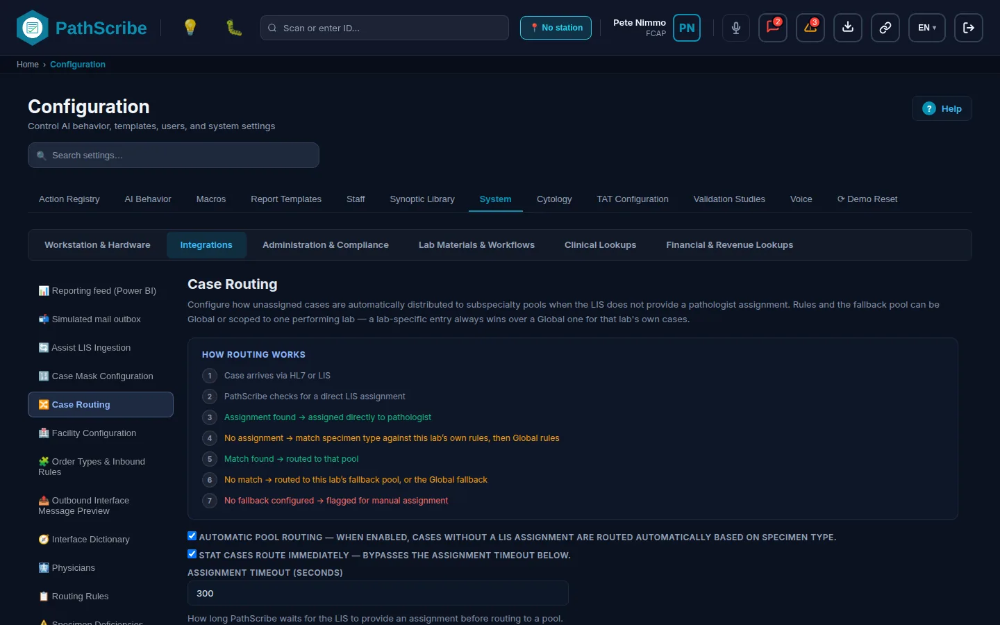
6. Field reference.
Routing configuration
| Field Name | Data Type / Format | Required/Optional | Description & Business Logic | System Default |
|---|---|---|---|---|
| Automatic Pool Routing | Yes/No checkbox | Optional | When on, cases without a LIS assignment are routed by specimen type. When off, routing returns "unrouted" and the case stays unassigned. | On |
| STAT Cases Route Immediately | Yes/No checkbox | Optional | When off, a STAT case is not routed at grossing completion at all (the result is "STAT immediate routing is disabled"). | On |
| Assignment Timeout (seconds) | Whole number, 0 to 3600 | Optional | Described on screen as how long PathScribe waits for the LIS to assign before routing to a pool; 0 routes immediately. The value is stored but no routing code reads it today, so it has no effect. | 300 |
| Global Fallback Pool | Picklist of active pools that have no performing lab (from Subspecialties), plus "None (manual assignment required)" | Optional | Where a case goes when no rule matches and no lab fallback or Default / Catch-All pool applies. | General Pathology (general) |
| Fallback Pool Override (one row per performing lab) | Picklist of pools that are Global or belong to that lab, plus "Use Global default" | Optional | A fallback pool for cases of that performing lab. A Default / Catch-All pool tagged on Subspecialties wins over this override, and the override wins over the Global fallback. | Use Global default |
| Save Routing Config | Button | Not applicable | Saves the switches, timeout and fallback pools. Rules are saved on their own as you change them. | Not applicable |
Routing Rules table
| Field Name | Data Type / Format | Required/Optional | Description & Business Logic | System Default |
|---|---|---|---|---|
| Search by keyword or note | Text | Optional | Filters the list. | Blank |
| Filter by status | Choice: All, Active, Inactive | Optional | Filters the list. | All |
| Filter by laboratory | Choice: All Labs, Global only, or one performing lab | Optional | Filters the list. | All Labs |
| Priority, Match, Pool, Performing Lab, Status | Columns | Not applicable | Match shows "N specimen types" when the rule maps specimen types, otherwise the first four keywords. The list shows lab-specific rules first, then Global rules, each by priority. Built-in rules carry a BUILT-IN badge. | Not applicable |
| Edit, Duplicate, Deactivate / Reactivate | Row buttons | Not applicable | There is no delete here (use Routing Rules to delete a custom rule). Duplicate opens the Add Routing Rule window with a copy. | Not applicable |
| + Add Routing Rule | Button | Not applicable | Opens the window below. | Not applicable |
Add Routing Rule and Edit Routing Rule window
| Field Name | Data Type / Format | Required/Optional | Description & Business Logic | System Default |
|---|---|---|---|---|
| Mapped Specimen Types | Checklist of active entries of the Specimen Dictionary, with a search box | Required unless a keyword is entered | The deterministic match: a specimen picked from the Specimen Dictionary is matched by its id. The window counts how many are selected. | None selected |
| Keyword Fallback | Comma-separated words | Required unless a specimen type is mapped | Used only for a specimen that has no Specimen Dictionary entry (manual or legacy entry). Case-insensitive, partial match. | Blank |
| Destination Pool | Picklist of active pools, shown as "Name, Global" or "Name, lab". When a Performing Lab is chosen, only Global pools and that lab's pools are offered | Required | The pool the case goes to. Error: "A destination pool is required." | None |
| Priority | Whole number, at least 1 | Required | Lower is checked first within the lab-specific tier and within the Global tier. Error: "Priority must be a positive number." This window does not refuse a priority another rule already uses. | 100 |
| Performing Lab | Picklist of performing labs, or "Global (checked for every lab)" | Optional | A lab-specific rule is checked before Global rules for that lab's own cases. | Global |
| Note | Text | Optional | Free text, searchable. | Blank |
| Status | Active / Inactive switch | Optional | An inactive rule is skipped. | Active |
Test Routing
| Field Name | Data Type / Format | Required/Optional | Description & Business Logic | System Default |
|---|---|---|---|---|
| Specimen Dictionary Entry | Picklist of active specimen entries, or "None (test the keyword fallback instead)" | Optional | Tests the specimen-type match. | None |
| Specimen Description | Text | Optional | Tests the keyword fallback. | Blank |
| As Performing Lab | Picklist of performing labs, or "Global only" | Optional | Tests as that lab's case. The result names the pool, whether it matched by specimen type or keyword, and the rule's lab. | Global only |
Manual Routing Run
| Field Name | Data Type / Format | Required/Optional | Description & Business Logic | System Default |
|---|---|---|---|---|
| Route Unassigned Cases Now | Button | Not applicable | Routes every case that has no assigned pathologist, is not already in a pool and is not finalized. Needs case:routing:run; without it nothing runs. Afterwards the screen shows Routed, Skipped and Failed counts and one line per case with the reason. Useful after changing rules or after a LIS outage. |
Not applicable |
7. Permissions. Open the screen: screen:configuration:open. Change the configuration and rules: config:case-routing:manage (high risk, audited). Run the manual routing: case:routing:run (high risk, audited). Admin and Lab Director hold both by default; Superadmin holds the whole catalog except config:ai-prompt:approve, which is withheld for separation of duties (the Lab Director approves AI instructions; ForMedrixAI support never does).
Known limits. Demonstration: rules and configuration are held in the browser's demonstration store and there is no server contract yet. Assignment Timeout is stored but not used. Routing runs only at grossing completion; there is no routing at accessioning.
# Action Groups
Status: Built
1. Navigation: Configuration tab System > group Lab Materials & Workflows 2. Maintenance item: Action Groups
3. Business purpose and scope. An action group is a named bundle of commands from the Action Registry (for example "Log Slide / Block"). A workstation group refers to action groups for the actions it allows by default and the ones it may add. An action can belong to more than one group.
4. Prerequisites and dependencies. The groups pick from the commands listed on the Action Registry tab. A group cannot be saved with no action selected.
5. Screen.
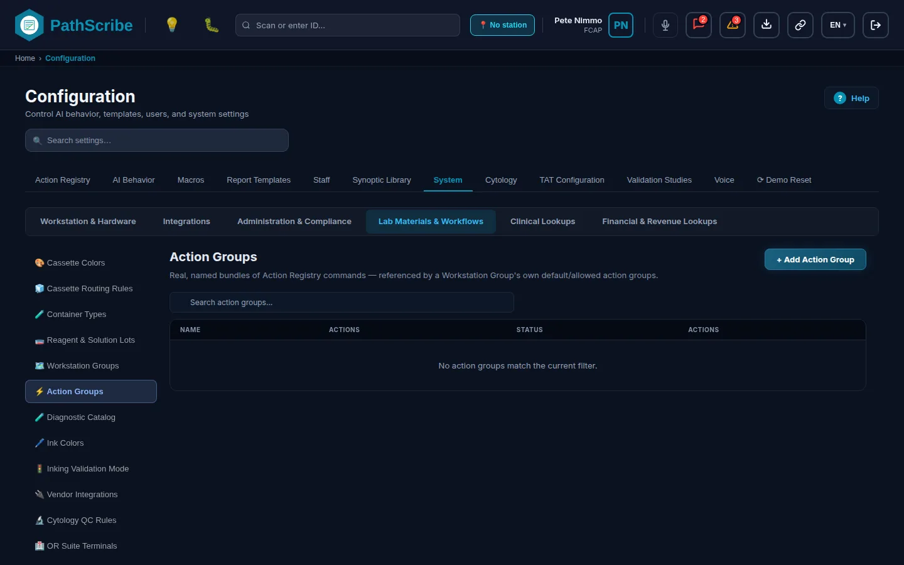
6. Field reference.
| Field Name | Data Type / Format | Required/Optional | Description & Business Logic | System Default |
|---|---|---|---|---|
| Search action groups | Text | Optional | Filters the list by group name. | Blank |
| Name (list) | Text | Not applicable | The group name. | Not applicable |
| Actions (list) | Text | Not applicable | The first three action names, then "+N more". | Not applicable |
| Status (list) | Active / Inactive | Not applicable | Shown in the list. Deactivate and Reactivate change it at once. | Not applicable |
| Edit, Duplicate, Deactivate / Reactivate | Row buttons | Not applicable | Duplicate opens Add Action Group pre-filled with the same actions and a copy name. There is no delete. | Not applicable |
Add Action Group and Edit window
| Field Name | Data Type / Format | Required/Optional | Description & Business Logic | System Default |
|---|---|---|---|---|
| Name | Text | Required | The group name. Error: "Required". | None |
| Actions | Checklist of every action in the Action Registry, shown as "Label (category)", with a search box | Required (at least one) | The commands in the bundle. Error: "Select at least one action". | None selected |
| Active | Active / Inactive switch | Optional | An inactive group is kept but marked Inactive. | Active |
7. Permissions. Open the screen: screen:configuration:open. Add, edit, duplicate, deactivate, reactivate: config:action-groups:manage (high risk, audited; checked in the service). Admin and Lab Director hold it by default.
Known limits. None known. The API server version is described in docs/architecture/CONFIG_SERVICES_API.md (IActionGroupService).
# Grossing templates, voice macros and auto-text libraries
This part covers the commands, text shortcuts and voice settings that speed up grossing and dictation, and the two grossing controls (route overrides and the inking check). The three grossing routes (Route A Standard Tissue, Route B Fluid / Cell Block, Route C Histology-Only / Direct Triage) are built in and cannot be added to. A department's starting route is set on Departments. The grossing templates themselves are report templates that are marked non-diagnostic; they are authored on the Report Templates tab, not here.
Grossing tile and bench tools (Batch 720). Grossing has its own tile under Pathology Workspace (/workstations/grossing), opened by the permission screen:grossing:open (Role Dictionary > Screens; seeded to Pathologist, Fellow, Resident and Pathologists Assistant). It lists the cases waiting to be grossed. The Grossing screen carries a Bench tools card (print cassettes, gross photo, decal batch, Add-On Orders) and four actions that can be granted in the Role Dictionary: grossing.printCassettes (Alt+Shift+1), grossing.takePhoto (Alt+Shift+2), grossing.assignDecal (Alt+Shift+3) and grossing.addOnOrder (Alt+Shift+4). Foot pedal 1 takes a photo and pedal 2 prints the cassettes, using the workstation's foot pedal bindings. Printing cassettes still follows Print Settings. Separately, Configuration > Print Settings has the checkbox "Print labels when a case is accessioned" (default on; a facility may override it).
# Action Registry (tab)
Status: Demonstration
1. Navigation: Configuration tab Action Registry 2. Maintenance item: System Action Registry
3. Business purpose and scope. The Action Registry lists every command PathScribe can run by keyboard shortcut or voice (for example "print current cassette"). The list of commands is fixed in the product; you cannot add or rename a command here. For each command you can change the keyboard shortcut, the spoken trigger phrases, and the station profiles it is limited to. A person's own learned voice phrases are a personal setting and are not changed here.
4. Prerequisites and dependencies. None for the tab itself. Action Groups pick commands from this list, so a command that is not here cannot be bundled.
5. Screen.

6. Field reference.
| Field Name | Data Type / Format | Required/Optional | Description & Business Logic | System Default |
|---|---|---|---|---|
| Search actions or voice triggers | Text | Optional | Filters by action name or by a trigger phrase. | Blank |
| Category buttons | One button per category, plus All | Optional | Shows only one category. | All |
| Action | Text (read only) | Not applicable | The command's name, with its required role under it. A command that is switched off in the product shows a Disabled badge and its Edit button is greyed out. | Not applicable |
| Shortcut (list) | Key combination (read only) | Not applicable | The current shortcut. A command that can be hidden by a screen's own key also shows "Alt+J, then (key)", which always reaches it. | Not applicable |
| Voice Triggers (list) | Phrases (read only) | Not applicable | The spoken phrases. | Not applicable |
| Download Template | Button | Not applicable | Downloads pathscribe_system_config.csv with every command (ID, label, category, shortcut, voice triggers). The download is recorded as an export. |
Not applicable |
| Bulk Import | CSV file button | Not applicable | Reads the same file format back. Only the Shortcut and Voice Triggers columns are applied, per existing command ID. Rows with an unknown ID, a repeated ID, a changed label or category, a disabled command, a shortcut repeated in the file or a reserved shortcut are skipped, and a summary lists the first five of each outcome. Voice triggers in the file are separated by semicolons. New rows are not accepted. | Not applicable |
Edit Action window
| Field Name | Data Type / Format | Required/Optional | Description & Business Logic | System Default |
|---|---|---|---|---|
| Shortcut | Key combination, recorded by pressing the keys | Optional | Click the field and press the combination. A combination already used by another command shows an error naming that command and a one-click Use (suggestion) instead offer; Save Changes is disabled while the error shows. Clear removes the shortcut. | The command's built-in shortcut |
| Voice Triggers | Comma-separated phrases | Optional | The spoken phrases that run the command. | The command's built-in phrases |
| Station Profiles | Checkboxes: every functional area of Histology, Cytology, Molecular and Autopsy | Optional | Limits the command to the chosen station profiles. Leave all unticked to allow it everywhere. | None ticked (allowed everywhere) |
7. Permissions. Open the tab: screen:configuration:open. Change a shortcut, trigger or station profile (edit or bulk import): config:actions:manage (high risk, audited; checked in the service). Admin and Lab Director hold it by default. Learned voice commands are a person's own setting and need no capability.
Commands added since the guide was first written (Batches 650 to 665). Add Collaborator (Ctrl+Alt+Shift+0; needs case:team:manage on the case, the same as the Case Team window, and a cytotechnologist cannot be added as a Consultant); Edit Field (Alt+E) and Cancel (Ctrl+Alt+J), which were listed before and now act; Add Addendum; Sign Out and Next; Collaborating Cases (Ctrl+Alt+F, formerly "Filter My Cases"); Go to Row (Alt+7) and Open Case by Accession (Alt+8) on the Worklist; and View Help, which moved from Alt+V to F1 (Alt+V is Full View on the report screen, and the Help button always works). Each command presses the same button as the mouse, so it is greyed by the same capability: Sign Out Case, Finalise and Sign Out and Next need surgical:report:sign-out; Accept needs case:pool:claim; Pass needs case:pool:pass. Twenty-nine registered commands still have no screen handler; each is listed with its reason in docs/product/KNOWN_GAPS.md, and a build test fails when a new command is registered with no listener and no listed reason. The collaborator message is an application notice sent on the person's behalf, so it needs no messaging permission; it is stored in English like the review-request message.
Known limits. Demonstration: the registry is held in the browser's demonstration store and no server contract for it exists in docs/architecture/. The list of commands is code, not data. The bulk import does not warn about a shortcut that clashes with a command outside the file; only the Edit window checks that.
# Macros (tab)
Status: Built
1. Navigation: Configuration tab Macros 2. Maintenance item: My Macros (text macros and the Word AutoText import)
3. Business purpose and scope. A macro is a block of formatted text that expands when someone types its shortcut (for example ;normcolon) in the report editor and presses Space. Macros live at one of three levels: Enterprise (every facility), Facility (one performing lab) or Personal (one person). Anyone can keep personal and facility macros; Enterprise macros and other people's personal macros are for administrators only. This is also where an auto-text library is loaded: Import from Word reads the AutoText and Building Blocks entries of a Word template.
4. Prerequisites and dependencies. Facility macros are filed under a performing lab from the Facility Dictionary; skip it and the facility list is empty, so a Facility macro cannot be saved. The editor's font list is fixed in the tab and does not read Approved Fonts.
5. Screen.

6. Field reference.
| Field Name | Data Type / Format | Required/Optional | Description & Business Logic | System Default |
|---|---|---|---|---|
| Tier tabs | All (administrators only), Enterprise, Facility, Personal, each with a count | Optional | All lists every macro grouped Enterprise, then each facility, then each person, sorted by name. An administrator opens on All; others open on Enterprise. | All (administrators) or Enterprise |
| Select a facility | Picklist of performing labs | Optional | Shown on the Facility tab; the list stays empty until a facility is chosen. | None |
| Macro list | Buttons showing name and shortcut | Not applicable | Selects a macro for editing. | Not applicable |
| + New | Button | Not applicable | Starts a new macro at the current tier. | Not applicable |
| Import from Word | File button, accepts .dotx, .dotm, .docx, .docm |
Optional | Opens the import window below. | Not applicable |
Macro editor
| Field Name | Data Type / Format | Required/Optional | Description & Business Logic | System Default |
|---|---|---|---|---|
| Macro Name | Text | Required | The macro's name. | None |
| Trigger Shortcut | Text starting with ; |
Required | Typed in the editor, then Space, to expand. A shortcut that does not start with ; is refused ("Trigger must start with ;"). |
None |
| Visibility | Choice: Enterprise, Facility, Personal | Required | Enterprise is offered only to administrators (roles admin, pathologist-admin, superadmin). A person without rights to the macro sees it read only ("Only an administrator can change this macro."). | The first tier the person may use |
| Facility | Picklist of performing labs | Required when Visibility is Facility | The performing lab the macro belongs to. | None |
| Content | Rich-text editor | Optional | The text that replaces the shortcut. Fonts offered: Arial, Times New Roman, Courier New, Roboto. | Blank |
| Delete | Button | Not applicable | Asks "Delete macro (name)?" and deactivates the macro (it leaves the list). Shown only when you may edit it. | Not applicable |
| Create Macro / Save Changes | Button | Not applicable | Saves. Disabled until something changed. | Not applicable |
Import from Word window
| Field Name | Data Type / Format | Required/Optional | Description & Business Logic | System Default |
|---|---|---|---|---|
| Entry checklist | One checkbox per AutoText or Building Block entry, with a 100-character preview | Optional | Shows how many entries were found. AutoText entries are ticked; other Building Block types (cover pages, headers, tables) are listed but not ticked. Entries with no text are skipped on import. | AutoText entries ticked |
| Import as | Choice: Personal, Facility, Enterprise | Required | The level the imported macros are created at. | Personal |
| Facility | Picklist of performing labs | Required when Import as is Facility | Error "Select which facility these imported macros belong to." if empty. | None |
| Import N Macros | Button | Not applicable | Creates one macro per ticked entry with category Custom. The shortcut is generated from the entry's name and made unique. | Not applicable |
7. Permissions. Open the tab: screen:configuration:open. Anyone may create and change their own personal macros without a capability. Creating or changing an Enterprise or Facility macro, or another person's personal macro, needs config:macros:manage (high risk, audited; checked in the service). Admin and Lab Director hold it by default.
Known limits. The editor's font list is a fixed list of four fonts, not the Approved Fonts dictionary. Deleting a macro deactivates it; there is no screen to reactivate one. Voice-triggered phrases are separate and are on the Voice tab.
# Voice (tab)
Status: Partial
1. Navigation: Configuration tab Voice 2. Maintenance item: Voice Integration, User Settings, Speech Processing Rules, Foot Pedal
3. Business purpose and scope. One tab with four areas. The first (Voice Integration) is a deployment switch for everyone. The other three are personal or per workstation: the regional accent profile, the person's own voice macros (spoken phrase to resulting text, called "Voice & Speech Macros"), and the foot pedal bindings of this computer.
4. Prerequisites and dependencies. None. Voice commands themselves are defined on the Action Registry.
5. Screen.

6. Field reference.
Voice Integration (deployment-wide)
| Field Name | Data Type / Format | Required/Optional | Description & Business Logic | System Default |
|---|---|---|---|---|
| Voice Commands & Dictation | On / Off switch | Optional | When off, the microphone button is greyed out and voice is unavailable to everyone. AI dictation refinement is available automatically if the deployment has an AI key configured. The environment setting VITE_VOICE_ENABLED=false removes voice entirely and overrides this switch. |
On |
| Match English commands loosely in other languages | On / Off switch | Optional | When a person dictates in French, German, Dutch or Korean and nothing in that language matches, a near miss may still run as an English command. Turn it off once the language's own commands are in place. Exact English phrases still work. | On |
| AI refinement instructions by language | Read-only expandable list | Not applicable | Shows the exact instructions sent to the AI when it refines dictated text, per English spelling convention and per other language. Entries not yet checked by a native speaker are flagged "needs native-speaker review". | Not applicable |
User Settings
| Field Name | Data Type / Format | Required/Optional | Description & Business Logic | System Default |
|---|---|---|---|---|
| Regional Accent Profile | Choice of 15 English accent profiles and French (France), German, Dutch (Belgium), Dutch (Netherlands), Spanish (Spain) and Korean | Optional | Sets the language the speech engine listens for. Kept per signed-in person. Dutch (Belgium) shows a note that no Belgian speaker has tested it. | Standard English (US) |
| Mic Sensitivity | Slider, shown at 85% | Not applicable | Display only. The slider is not connected to anything; gain is handled by the browser. | 85% (display) |
Voice & Speech Macros
| Field Name | Data Type / Format | Required/Optional | Description & Business Logic | System Default |
|---|---|---|---|---|
| Test Voice | Button | Not applicable | Listens and shows "Heard: (text)" so the person can check the microphone. | Not applicable |
| Bulk Import | CSV file button | Optional | One macro per line in the form name, resulting text. Anything after a second comma is dropped. |
Not applicable |
| Add Macro | Button | Not applicable | Adds an empty row in edit mode, owned by the signed-in person. | Not applicable |
| Search macros | Text | Optional | Filters by spoken name or resulting text. | Blank |
| Status filter | Choice: All Status, Active Only, Inactive Only | Optional | Filters the list. | All Status |
| Name | Text | Required in practice | The spoken phrase. | New macro: blank |
| Resulting Text | Text | Optional | The text written when the phrase is heard. | Blank |
| Status | Active / Inactive toggle, editable only in edit mode | Optional | An inactive macro is not used. | Active |
| Edit, Save, Delete (trash icon) | Row buttons | Not applicable | Delete removes the row at once with no confirmation. | Not applicable |
Foot Pedal (This Workstation)
| Field Name | Data Type / Format | Required/Optional | Description & Business Logic | System Default |
|---|---|---|---|---|
| Pedal 1, Primary Action | Bound key or pedal button | Optional | Push-to-talk on sign-out, confirm piece count on embedding. | Not bound |
| Pedal 2, Advance / Next | Bound key or pedal button | Optional | Next field on sign-out, print or etch next on the microtome. | Not bound |
| Pedal 3, Pause / Replay Last Segment | Bound key or pedal button | Optional | Sign-out dictation only. Pause works once bound; Replay also needs microphone access, which may be asked for in the first sign-out session. | Not bound |
| Bind, Rebind, Cancel, Clear | Buttons | Not applicable | Bind waits for the next press of the real pedal and stores whatever it sends (a keyboard key or a gamepad-style button). The binding belongs to this computer's browser, not to the person's account. | Not applicable |
7. Permissions. Open the tab: screen:configuration:open. The Voice Integration switches need config:voice:manage (high risk, audited; checked when the setting is saved, and the area shows view only without it). Accent, voice macros and foot pedal are personal or per-workstation and need no capability. Admin and Lab Director hold config:voice:manage by default.
Known limits. The two deployment switches are saved in the browser's stored system configuration. A server contract for system configuration exists (docs/architecture/DICTIONARIES_CONFIG_API.md, ISystemConfigService) but this tab does not call it yet, so with the API server connected the switches do not persist between sessions. Voice macros have a server contract (docs/architecture/MACROS_API.md). Mic Sensitivity is display only. There is no screen to publish shared (Enterprise or Facility) voice macros; the tab manages the signed-in person's own.
# Grossing Route Overrides
Status: Built
1. Navigation: Configuration tab System > group Lab Materials & Workflows 2. Maintenance item: Grossing Route Overrides
3. Business purpose and scope. An override says that, for one facility, one specimen type always uses a named grossing route. After accessioning, PathScribe proposes a grossing template for each specimen. A specimen that matches an active override (same facility and exactly the same specimen type) takes the override's route with 100 percent confidence and is not sent to the AI at all. Everything not listed uses the normal routing.
4. Prerequisites and dependencies. The facility comes from the Facility Dictionary and the specimen type must match the type field of a Specimen Dictionary entry exactly (typing offers the known types). Skip the facilities and the Facility list is empty.
5. Screen.
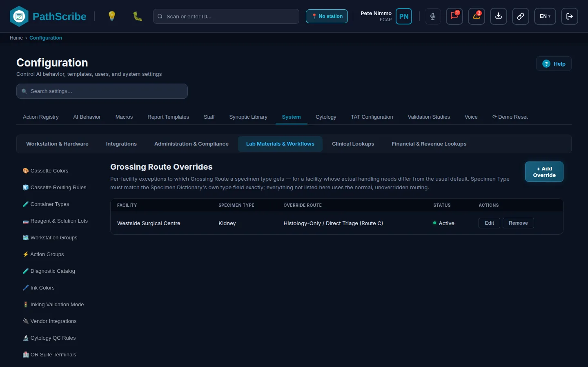
6. Field reference.
| Field Name | Data Type / Format | Required/Optional | Description & Business Logic | System Default |
|---|---|---|---|---|
| Facility (list) | Facility name | Not applicable | The facility the override applies to. | Not applicable |
| Specimen Type (list) | Text | Not applicable | The specimen type the override applies to. | Not applicable |
| Override Route (list) | Route name | Not applicable | The route the specimen is given. | Not applicable |
| Status (list) | Active / Inactive | Not applicable | Only active overrides are applied. | Not applicable |
| Edit, Remove | Row buttons | Not applicable | Remove deletes the override at once with no confirmation. Set the override to Inactive to keep it. | Not applicable |
Add Grossing Route Override and Edit window
| Field Name | Data Type / Format | Required/Optional | Description & Business Logic | System Default |
|---|---|---|---|---|
| Facility | Picklist of facilities (from Facility Dictionary) | Required | Matched to the case's facility at accessioning. | The first facility in the list |
| Specimen Type | Text with suggestions from the Specimen Dictionary's type values | Required | Must equal the Specimen Dictionary type exactly (the match is exact). Error "Required" when empty. A value that matches no dictionary type is accepted and simply never matches. | None |
| Override Route | Choice: Standard Tissue Grossing (Route A), Fluid / Cell Block Grossing (Route B), Histology-Only / Direct Triage (Route C) | Required | The route the specimen gets. | Standard Tissue Grossing (Route A) |
| Status | Active / Inactive switch | Optional | An inactive override is ignored. | Active |
7. Permissions. Open the screen: screen:configuration:open. Add, edit, remove: config:grossing-routes:manage (high risk, audited; checked in the service). Admin and Lab Director hold it by default.
Known limits. The demonstration data contains one override (Kidney to Route C at facility c-westside). The override is applied only by the grossing-template proposal that runs after accessioning. A route chosen at a department level (Departments) is not changed by an override.
# Inking Validation Mode
Status: Partial
1. Navigation: Configuration tab System > group Lab Materials & Workflows 2. Maintenance item: Inking Validation Mode
3. Business purpose and scope. The structured inking check looks at every margin of a case when someone selects Complete grossing and again at sign-out. It finds three kinds of issue: a margin not marked examined (Severity 2), a margin with no ink recorded (Severity 2), and an ink colour code that is not in the active ink-colour dictionary (Severity 3). This screen chooses, for one facility, between Warn Only and Strict Enforce.
What the code does today (verified in the source). The screen text says Strict Enforce hard-blocks Complete grossing on a Severity 2 issue. The gate that stops Complete grossing does not do that in either mode:
- Severity 3 (unmapped ink colour) always blocks Complete grossing. At sign-out it blocks, or asks for an override from a person holding case:inking-gate:override.
- Severity 2 at Complete grossing shows a Proceed with Advisory Note confirmation and then lets grossing complete, in both modes.
- The only visible difference today is the notice on the Grossing screen: "Strict Enforce: issues shown below will block sign-out until corrected" against "Warn & Advisory: issues shown below don't block sign-out".
- If the ink-colour dictionary cannot be loaded the gate refuses to proceed (palette unavailable).
The difference between the screen text and the gate is listed for Pete in open-questions/ch4.md.
4. Prerequisites and dependencies. The check compares recorded ink colours with the active ink colours. Skip Ink Colors and every recorded ink colour is unmapped (Severity 3), which blocks Complete grossing. Facilities come from the Facility Dictionary.
5. Screen.
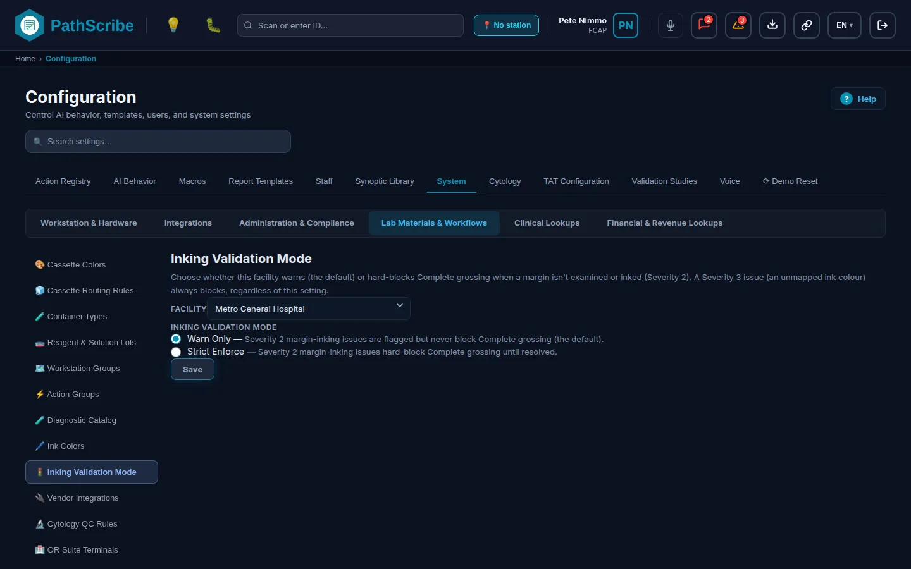
6. Field reference.
| Field Name | Data Type / Format | Required/Optional | Description & Business Logic | System Default |
|---|---|---|---|---|
| Facility | Picklist of facilities | Required | The mode is stored per facility. Choosing another facility loads its saved mode. | The first facility in the list |
| Inking validation mode | Choice (radio): Warn Only, Strict Enforce | Required | Warn Only: Severity 2 issues are flagged but never block (the default). Strict Enforce: described on screen as blocking Complete grossing on Severity 2; see "What the code does today" above. Severity 3 always blocks. | Warn Only |
| Save | Button | Not applicable | Enabled only after a change. Shows "Saved." or "You don't have permission to change this." A change is written to the audit log as "Inking validation mode changed" with the old and new mode. | Not applicable |
7. Permissions. Open the screen: screen:configuration:open. Change the mode: config:inking-validation-mode:manage (high risk, audited; checked in the service for that facility). Admin and Lab Director hold it by default. Overriding a Severity 3 stop at sign-out: case:inking-gate:override, held by Admin and Lab Director.
Known limits. Partial for the reason above: the mode is saved and shown, but Strict Enforce does not add a hard stop at Complete grossing. The setting is held in the browser's site-settings store; no server contract for site settings exists in docs/architecture/ yet.
# Histology worklists, embedding, microtome and staining stations
This part covers the bench screens of the histology workflow. They are day-to-day workbench screens, not maintenance screens, so each uses the reference layout: what it shows, what it needs configured first, and which settings change its behaviour. There is no separate configuration screen for the stations themselves. A station's behaviour is set on screens in other chapters: the Scan Stations and Printer Profiles screens (which printer a station uses), the Label Designer (what the printed label shows), Field Requirements (which fields must be filled, by page: batchManagement, embedding, microtomy, slideDistribution), and the Voice tab (foot pedal). A staining station has no screen of its own: staining runs are batches (see Batch Management), and the stain list is the Diagnostic Catalog.
# Batch Management
Status: Built
1. Navigation: Home > Batch Management (not in Configuration). Opens with screen:batch-management:open.
2. Maintenance item: Not applicable. This is a workbench hub.
3. Business purpose and scope. Batch Management tracks groups of cassettes and slides through the processing nodes (Decal / Special Processing, Processing, Embedding, Microtome / Sectioning, Staining, Checkout, External Referral, Cytology Processing, Cytology Staining, Cytology Imaging) by container barcode. It gives chain-of-custody scanning, reconciliation, and a set of queue and report pages reached from tiles. A batch is a container (a staining rack, tissue processor basket, archive storage tray, decal vessel or ad-hoc batch) with a master barcode and a manifest of the items scanned into it.
4. Prerequisites and dependencies. The screen reads the scan station set for this computer (to pre-fill the target workstation and to scope the Disposal Queue and Pending Load to the station's facility), the reagent lots and stains for staining and cytology batches, and the facilities with the Reference Lab role for referral batches. With none of these the page still opens, but the matching fields of New Container stay empty.
5. Screen.

6. Field reference. This is a reference page: the tables list controls, columns and filters.
Hub page
| Field Name | Data Type / Format | Required/Optional | Description & Business Logic | System Default |
|---|---|---|---|---|
| Node tiles (one per processing node) | Tile with the count of open batches | Optional | Select a tile to show only batches at that node; select it again to reset. | No filter |
| Scan or enter a master batch barcode | Text or scanner input | Optional | A batch barcode opens that batch. A scanned CONT- or RACK- code that matches an available reusable rack opens New Container with that rack filled in. A rack already checked out, or an unknown code, shows an error and a tone. |
Blank |
| New Container | Button | Not applicable | Opens the window below. | Not applicable |
| Active & Reconciling | List with count | Not applicable | Open batches, with item count and STAT mark. | Not applicable |
| Complete & Aborted | List with count | Not applicable | Closed batches. | Not applicable |
| Tool tiles | Disposal, Waste Tracking Report, Retention Holds, Pending Load, Label reprint, Slide scanning, Engraver Monitor, Equipment log | Not applicable | Each opens one of the pages described below. | Not applicable |
New Container window
| Field Name | Data Type / Format | Required/Optional | Description & Business Logic | System Default |
|---|---|---|---|---|
| Container Type | Choice: Staining rack, Tissue processor basket, Archive storage tray, Decal vessel, Ad-hoc batch | Required | The kind of carrier. A reusable rack list is filtered to racks of this type that are Available. | Staining rack |
| Target Workstation | Picklist of scan stations, or "No station" | Optional | Choosing a station sets the Processing Node from the station's own stage. If the station is normally a different node, a warning asks you to check. | The station set for this computer |
| Processing Node | Choice of the ten nodes | Required | Decides which of the extra fields below appear. | Decal / Special Processing, or from the station |
| Protocol / Run Parameters | Text | Required (locked) | For example "Standard H&E Overnight Run". Cannot be switched off in Field Requirements. | None |
| Priority | Choice: Routine, STAT | Required | Marks the batch. | Routine |
| Solution Type | Choice: EDTA, 10% NBF (fixation window), Rapid decal (formic/HCl) | Required on a Decal node | The decal solution. | First option |
| Target Duration / Alert Timer | Hours and minutes | Required on a Decal node (locked) | Sets the timer. A warning alert shows 15 minutes before the target. | 4 hr 0 min |
| Reference Lab Destination | Picklist of facilities with the Reference Lab role | Required on an External Referral node (locked) | Where the batch goes. If none exists the window says to add one in the Facility settings first. | None |
| Test / Panel Requested (optional) | Text | Optional (can be made required) | The test requested from the reference lab. | Blank |
| Stain Protocol | Picklist of stains (from Diagnostic Catalog) | Required on a Cytology Staining node (locked) | The stain the batch is for. | None |
| Reagent / solution lots used | Checklist of active lots (from Reagent & Solution Lots) | Optional (can be made required) on a Staining node | Records the lots for the run. Can be scanned in later. | None |
| Container Identifier Mode | Choice: Disposable Label, Reusable Rack | Required | Disposable: the system generates a single-use timestamped label. Reusable: an existing engraved rack is used and no label is printed. | Disposable Label |
| Rack ID | Scan or text | Required for Reusable Rack (locked) | The rack to check out. | Blank |
| Generate & Print / Start Session | Button | Not applicable | Creates the batch. Shows "Still required: (fields)" until the required fields are filled. For a disposable label the next step shows the Master Batch Barcode with Print; for a rack it says the rack is now checked out and nothing is printed. Continue, Scan Items opens the batch. | Not applicable |
Batch detail page
| Field Name | Data Type / Format | Required/Optional | Description & Business Logic | System Default |
|---|---|---|---|---|
| Scan a cassette or slide barcode | Scanner input (no click needed) | Optional | Adds the item to the manifest. Rejected with a message when the code matches no cassette or slide, is already in this batch, or is in another active batch. | Not applicable |
| Manifest | List with count | Not applicable | Items in the batch, each with Move (to another active batch) and Remove. | Not applicable |
| Start Reconciliation | Button | Not applicable | Starts out-of-process verification: scan each physical item as it leaves the carrier. Items show Matched, Missing or Unexpected. | Not applicable |
| Complete Batch | Button | Not applicable | Disabled while items are missing or unexpected (the tooltip gives the counts), and refused while a cold-chain excursion is unacknowledged. | Not applicable |
| Supervisor Override (Override & Complete) | Link and window with a required Reason | Required reason | Completes with discrepancies. Recorded against the person's name. Needs batch:reconciliation:override. |
Not applicable |
| Abort Batch | Button and window with a required Reason | Required reason | The batch and manifest are kept for audit, marked Aborted, and take no more scans. Needs batch:run:abort. |
Not applicable |
| Acknowledge (cold-chain excursion) | Button and window with a required Note | Required note | Shown when a smart container reported an out-of-range temperature. Needs batch:cold-chain-excursion:acknowledge. |
Not applicable |
| Transfer to Processing | Button | Not applicable | Moves the same batch, with its items, to Processing (Batch 726; it used to create a new Processing batch). Needs batch:carrier:advance. |
Not applicable |
| Release Rack | Button | Not applicable | Returns a reusable rack to Available. | Not applicable |
| Referral status | Text | Not applicable | For a referral batch: dispatched, in transit, delivered, result received (with a link when the result is a PDF). | Not applicable |
| Instrument reports; Cold chain panel | Text | Not applicable | Cytology instrument status; temperature readings for a batch in a smart container. | Not applicable |
Disposal Queue
| Field Name | Data Type / Format | Required/Optional | Description & Business Logic | System Default |
|---|---|---|---|---|
| Scan a cassette or slide barcode | Scanner input | Optional | Disposes the item at once and flashes a confirmation. Needs retention:material:dispose. |
Not applicable |
| Qualifying for Disposal | List with count | Not applicable | Blocks and slides whose retention period has elapsed, with no active hold and not already disposed, computed fresh from case data each time. Scoped to the station's facility; with no scan station set, all locations show. | Not applicable |
Waste Tracking Report
| Field Name | Data Type / Format | Required/Optional | Description & Business Logic | System Default |
|---|---|---|---|---|
| Filter by facility | Picklist | Optional | Limits the report. | All Facilities |
| Filter by material type | Picklist | Optional | Limits the report. | All Material Types |
| From date, To date | Dates | Optional | Limits by disposal date. | Blank |
| Total Disposed | Number | Not applicable | Count of rows shown. | Not applicable |
| Columns | Disposed, Type, Item ID, Case, Specimen, Disposed By, Location | Not applicable | One row per disposed item. | Not applicable |
| Export | Button | Not applicable | Downloads a CSV with the same columns. Needs retention:disposal-report:export. |
Not applicable |
Retention Holds
| Field Name | Data Type / Format | Required/Optional | Description & Business Logic | System Default |
|---|---|---|---|---|
| Search case, reason or person | Text | Optional | Filters the list. | Blank |
| Columns | Case, Reason, Note, Placed by, Placed, Actions | Not applicable | One row per active hold ("N active holds"). | Not applicable |
| Release | Button and window with a Release note | Required note | Releases the hold. Needs case:retention-hold:release. |
Not applicable |
| Export CSV | Button | Not applicable | Needs retention:holds-queue:export. |
Not applicable |
Pending Load
| Field Name | Data Type / Format | Required/Optional | Description & Business Logic | System Default |
|---|---|---|---|---|
| Scan or type to search | Text or scanner | Optional | Filters by cassette or slide id, case or specimen. Clear resets. | Blank |
| Refresh | Button | Not applicable | Recomputes the queue. | Not applicable |
| Awaiting Batch Load | List grouped by case | Not applicable | Cassettes and slides printed or engraved but not scanned into any active batch, derived fresh from case data. Scoped to the station's facility; with no station set, every facility shows. | Not applicable |
Label reprint
| Field Name | Data Type / Format | Required/Optional | Description & Business Logic | System Default |
|---|---|---|---|---|
| Accessioned from, Accessioned to | Dates | Optional | Finds cases by accession date. | Blank |
| Accession number from, Accession number to | Text | Optional | Finds cases by accession number range. At least one of the four is needed; an empty filter finds nothing. | Blank |
| Find cases | Button | Not applicable | Lists the cases found, oldest first, each with a Reprint checkbox and its specimens. | Not applicable |
| Labels | Checkboxes: Cassettes, Specimen containers, Requisition | Optional | Which label kinds to print. | None ticked |
| Cassette printer | Picklist of printers | Required when cassettes are chosen | Error "Choose the cassette printer first." | None |
| Reprint labels | Button | Not applicable | Prints one label at a time (about 0.25 second apart), showing progress. Every label is audited. Needs label:batch:reprint (held by Histotechnologist and Admin by default). Afterwards a summary shows Printed, failed and blocked by the on-demand guardrail, and Retry N failed labels. |
Not applicable |
Slide scanning
| Field Name | Data Type / Format | Required/Optional | Description & Business Logic | System Default |
|---|---|---|---|---|
| Scanning queue | Table: Choose, Case, Slide, Priority, Routed to, Rack / slot | Not applicable | Slides routed to Digital at the Slide Distribution Station. | Not applicable |
| Slide scanner | Picklist of equipment of kind "Slide scanner" (from Equipment) | Required | If none exists the page says to add them in Configuration, Equipment. | None |
| Load N slides | Button | Not applicable | Creates a scan batch on the scanner. Needs wsi:scan-batch:load. |
Not applicable |
| Scan batches | Table: Batch, Scanner, Status, Progress, Loaded, Actions | Not applicable | Progress shows scanned, failed and waiting. A batch that was not sent shows "Not sent (code, time)" with a retry. Image QC failures show the reason. | Not applicable |
| Send, Unload | Buttons | Not applicable | Send (wsi:scan-batch:send) sends the scan manifest to the interface engine. Unload (wsi:scan-batch:unload) closes the batch once every slide has a result; slides that did not scan return to the queue. |
Not applicable |
Engraver Monitor
| Field Name | Data Type / Format | Required/Optional | Description & Business Logic | System Default |
|---|---|---|---|---|
| Filter by organisation | Picklist | Optional | Limits the devices. | All organisations |
| Devices | Cards with status, warnings, supply warnings by cassette colour and "Reported (time)" | Not applicable | A read-only summary refreshed about every 30 seconds. A Simulated badge shows when no live source is configured. | Not applicable |
| Launch Engine Diagnostics | Link | Not applicable | Opens the cassette engine's own diagnostics page when the device reports a link. | Not applicable |
Equipment log
| Field Name | Data Type / Format | Required/Optional | Description & Business Logic | System Default |
|---|---|---|---|---|
| Equipment table | Each active instrument with its maintenance and calibration status | Not applicable | Rows with a service alert are highlighted. Adding or changing equipment is on Equipment. | Not applicable |
| Log entry | Button per instrument | Not applicable | Records maintenance or calibration. Needs equipment:maintenance:record (Histotechnologist, Cytotechnologist, Molecular Technologist, Admin and Lab Director hold it). |
Not applicable |
7. Permissions. Open the screen: screen:batch-management:open (Histotechnologist, Cytotechnologist, Molecular Technologist and Admin). Histotechnologist, Cytotechnologist and Molecular Technologist also start with batch:reconciliation:override, batch:run:abort, batch:cold-chain-excursion:acknowledge (all high risk, audited), retention:material:dispose, retention:disposal-report:export, retention:holds-queue:export and the three wsi:scan-batch:* capabilities. Admin opens the screen but holds none of those; Admin does hold label:batch:reprint and equipment:maintenance:record. case:retention-hold:release is held by every case role (Pathologist, Fellow, Resident, PA, Accessioner and the three technologist roles).
Known limits. The Engraver Monitor reads a Firebase collection (engraver_devices) when Firebase is configured and shows simulated devices otherwise; Firebase is not the production database and this will be replaced. The README.md in src/pages/BatchManagement/ still says the Retention Holds queue is not built; the page and tile exist. Batches are Built (IBatchService in docs/architecture/CASE_WORKFLOWS_API.md).
# Embedding Station
Status: Built
1. Navigation: Home > Embedding Station. Opens with screen:embedding:open (Histotechnologist and PA).
2. Maintenance item: Not applicable. This is a workbench screen.
3. Business purpose and scope. The embedding bench screen. A technologist scans a cassette, verifies the piece count against grossing, records the mold and orientation, reports any discrepancy, groups blocks that share one specimen, and reprints the cassette label when needed.
4. Prerequisites and dependencies. Cassette label printing needs a scan station set for this computer with printing switched on and a cassette printer profile; without it the printer panel says "This station isn't configured for real cassette-label printing." The label preview uses the label layout of the Label Designer. Which entries are mandatory comes from Field Requirements (page embedding).
5. Screen.
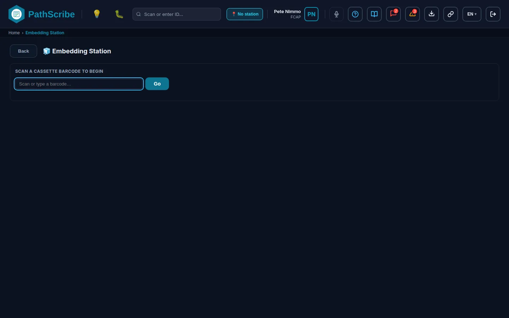
6. Field reference. Reference page: the controls on the screen.
| Field Name | Data Type / Format | Required/Optional | Description & Business Logic | System Default |
|---|---|---|---|---|
| Scan a cassette barcode | Scanner or text | Required to begin | Loads the block. Scans starting with STATION: are ignored. |
Blank |
| Context bar | Accession, Patient, DOB, Specimen/Block, Type | Not applicable | Patient fields are tagged as patient data for screenshot redaction. Scan next cassette clears the screen. | Not applicable |
| Specimen Blocks | List | Not applicable | The specimen's blocks and their status, with the current one marked. | Not applicable |
| Observed count; Confirm | Whole number | Required unless made optional in Field Requirements | Piece Count Verification against the expected count from grossing. | Blank |
| Base Mold Size | Choice: 7x7mm, 15x15mm, 24x24mm, 24x30mm, Mega Mold | Optional (can be made required) | Recorded on the block. | None |
| Orientation Instructions | Free text, with quick fills "Embed on edge", "Epithelial surface down", "Cross-section up" | Optional (can be made required) | Recorded on the block. | Blank |
| Discrepancy Reporting | One-touch buttons: Missing Tissue/Empty Cassette, Extra Tissue Found, Unopened Cassette/Unprocessed Tissue, Damaged Cassette/Broken Hinge | Optional | Flags the block; shows "Last flagged: (reason) (by name)". | None |
| Alert flags | Tiny tissue, Fragile, Requires decal | Optional | Marks the block. | Off |
| Multi-Cassette / Split-Block | Choice of other ungrouped blocks of the same specimen | Optional | Group as split cassettes links them. | None |
| Block comments | Drawer with Comment text and Add Comment | Optional (text can be made required) | Comments on the block. | Blank |
| Cassette Reprint | Button, then a window with a Reason picklist | Required reason | Reasons: Wax Buildup, Faded Barcode, Mechanical Jam, Other. The count and last reason are shown. | Not applicable |
| Device Status, Label Preview | Display | Not applicable | The printer's status and a preview of the cassette label. | Not applicable |
| Foot pedal | Hardware | Optional | Pedal 1 confirms the piece count (see Voice tab). | Not bound |
7. Permissions. Open the screen: screen:embedding:open. Protected steps (reprint, comments) are recorded with the person; no separate configuration capability applies.
Known limits. The reprint-reason, mold-size and discrepancy lists are fixed in the product and are not editable.
# Microtome Workstation
Status: Built
1. Navigation: Home > Microtome Workstation. Opens with screen:microtomy:open (Histotechnologist).
2. Maintenance item: Not applicable. This is a workbench screen.
3. Business purpose and scope. The sectioning bench screen. A technologist scans a block (or a decant or fluid container for cytology), adds the slides to cut by stain and level, prints or etches slide labels one at a time or as a batch, reprints with a reason, flags a block as exhausted, and watches billing for the block.
4. Prerequisites and dependencies. The stain picklist is the Diagnostic Catalog. Slide label printing needs a scan station with slide printing and a printer profile. Mandatory entries come from Field Requirements (page microtomy).
5. Screen.
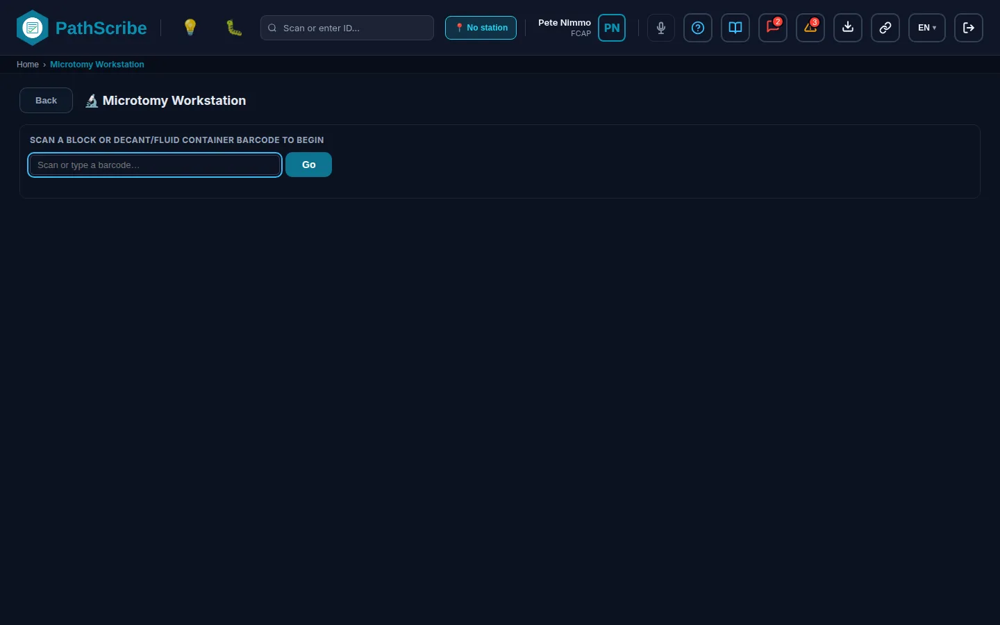
6. Field reference. Reference page: the controls on the screen.
| Field Name | Data Type / Format | Required/Optional | Description & Business Logic | System Default |
|---|---|---|---|---|
| Scan a block or decant/fluid container barcode | Scanner or text | Required to begin | Loads the block. | Blank |
| Block Summary | Display | Not applicable | Status, piece count, tissue, block comments, prior slide history, and for a matrix block the cores in it with position and specimen. | Not applicable |
| Slide Grid | Table: Level, Stain, Print Status, Actions | Not applicable | One row per slide. Print prints one; Reprint needs a reason; Remove of a printed slide needs a cancel reason. A Control slide can be paired. | Not applicable |
| Stain (add slide) | Picklist with search | Required (can be switched off) | The stain for a new slide. | None |
| Duplicates | Whole number | Optional | How many of the same stain. | 1 |
| Level depth | Number in µm | Optional (can be made required) | Depth of the cut. + Level cuts another level of the same stain. | Blank |
| Reprint reason | Choice: Jam, Scratched Glass, Misprint, Other | Required reason | Recorded with the slide. | None |
| Cancel reason (printed slide) | Choice: Damaged Section, Ordered in Error, Tissue Exhausted, Other | Required reason | Cancelling a slide that has already printed. | None |
| Print Mode | Choice: On-Demand, Batch | Optional | On-Demand uses Print/Etch Next for the next unprinted slide; Batch prints the ticked slides with a progress window. | On-Demand |
| Slide and block comments | Drawer with Comment and a checkbox "Print this comment on the physical label" | Optional (text can be made required) | A comment on a slide can print on the label. | Blank |
| Block exhausted | Button and window with a required Note | Required note | E-mails the ordering pathologist and blocks cutting until they approve destructive cutting or cancel or change the order. Approval needs add-on:exception:approve-destructive-cut. |
Not applicable |
| Specimen Fluid / Decant Panel | Total Volume (mL); Appearance: Clear, Bloody, Turbid; Decant Yield: Low, Moderate, High | Optional | Cytology fluid entries. Shows a suggested preparation with Accept suggestion. | Blank |
| Billing panel | Display | Not applicable | Charges for the block's slides, with warnings for charges awaiting approval; Full billing review needs the billing review permission. | Not applicable |
| Foot pedal | Hardware | Optional | Pedal 2 prints or etches the next slide (see Voice tab). | Not bound |
7. Permissions. Open the screen: screen:microtomy:open. Approving destructive cutting: add-on:exception:approve-destructive-cut (Pathologist, Fellow, Resident). Full billing review: billing:applied-code:review.
Known limits. The reason lists are fixed in the product.
# Slide Distribution Station
Status: Built
1. Navigation: Home > Slide Distribution Station. Opens with screen:slide-distribution:open (Histotechnologist).
2. Maintenance item: Not applicable. This is a workbench screen.
3. Business purpose and scope. The slide hand-out screen. A technologist scans slides into a work queue, then routes each one either to a physical checkout (a pathologist or pool, with a folder, tray or courier bag) or to a digital scanner (a rack and slot), and logs scan exceptions.
4. Prerequisites and dependencies. Pathologists and pools come from the staff list and from Subspecialties pools. Scanners are equipment of kind "Slide scanner" on Equipment; without them the picklist says none are set up. Mandatory entries come from Field Requirements (page slideDistribution).
5. Screen.
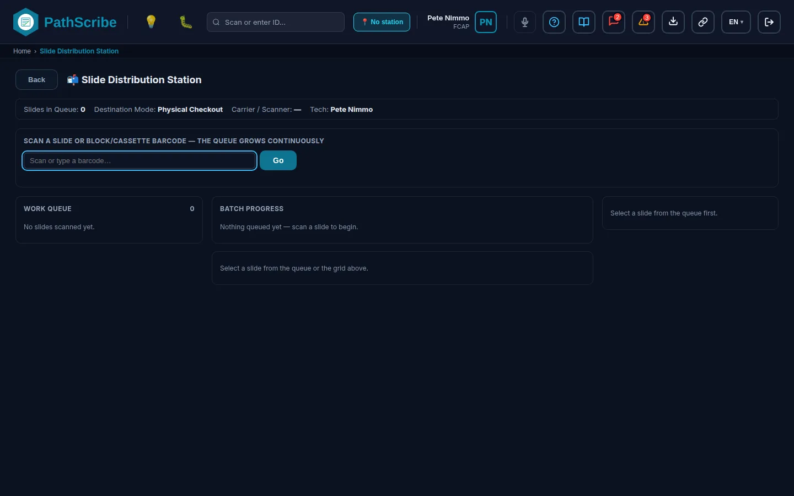
6. Field reference. Reference page: the controls on the screen.
| Field Name | Data Type / Format | Required/Optional | Description & Business Logic | System Default |
|---|---|---|---|---|
| Scan a slide or block/cassette barcode | Scanner or text | Optional | The queue grows continuously. | Blank |
| Work Queue | List with count | Not applicable | Slides with stain, status, and routing; Remove from queue removes one. Can be grouped by subspecialty pool or Unassigned. | Not applicable |
| Destination Mode | Choice: Physical Checkout, Digital Scanner | Required | Chooses the destination form. | Physical Checkout |
| Pathologist or pool | Search picklist | Required (can be switched off) | Who receives the slide. | None |
| Slide Folder ID, Tray Number, Courier Transit Bag | Text | Optional (each can be made required) | Physical location detail. Confirm Physical Routing saves. | Blank |
| Scanner Instrument | Picklist of slide scanners | Required for Digital | The scanner. | None |
| Rack ID, Slot Position | Text | Optional (each can be made required) | Position on the scanner. Confirm Scanner Routing saves and puts the slide in the scanning queue. | Blank |
| Active Slide, Chain of Custody | Display | Not applicable | The selected slide's status and history. | Not applicable |
| Trigger Replacement Label | Button and window with Reason | Required reason | Reasons: Damaged Label, Unreadable Barcode, Smudged Print, Other. Kept on the chain-of-custody record. | Not applicable |
| Scan Exception Log | Unresolved scans with Resolve and an optional Note | Optional (note can be made required) | Reasons: Unreadable Barcode, Unassigned Accession, Missing Glass. | Not applicable |
7. Permissions. Open the screen: screen:slide-distribution:open. No separate configuration capability applies.
Known limits. The reason lists are fixed in the product. The routing data model (Slide Folder, Tray, Courier Transit Bag) has no dictionary behind it; the values are free text.
# Digital pathology and WSI scanner integration and viewer settings
This part covers what PathScribe offers for digital pathology today. Be exact about the extent. There are two pieces. First, the vendor dictionaries on Vendor Integrations, which are lists of names and web addresses. Second, the slide-scanning queue on Batch Management, which sends a scan manifest to the interface engine and takes a status back. Not built: a vendor-specific scanner driver or a vendor connector. No screen configures a scanner other than naming it as Equipment of kind "Slide scanner" on Equipment. The image viewer launch is described under Vendor Integrations. The mock viewer page is a demonstration only.
# Vendor Integrations
Status: Built
1. Navigation: Configuration tab System > group Lab Materials & Workflows 2. Maintenance item: Vendor Integrations (four categories in a left-hand list: Digital Pathology / AI, WSI Viewers, Image Management Systems, Gross / Macro Imaging & Telepathology)
3. Business purpose and scope. One screen holds four dictionaries of external products. Each is a list with Add, Edit, Deactivate / Reactivate and a Show inactive switch. Entries are never deleted. The lists are reference data: pick-lists and links that other parts of PathScribe read. The Digital Pathology / AI, Image Management Systems and Gross / Macro Imaging lists are names and settings that are recorded and shown; the product contains no vendor-specific connector that acts on them. Only the WSI Viewers list has a working use: its Launch URL Template is opened from a case by the Launch in Viewer button.
4. Prerequisites and dependencies. None other than the person's access. Add a WSI viewer here before slides can be opened in an external viewer; scanner hardware is a separate list (Equipment).
5. Screen.
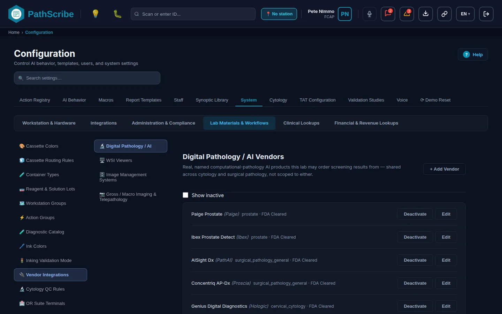
6. Field reference.
Digital Pathology / AI (add and edit window)
| Field Name | Data Type / Format | Required/Optional | Description & Business Logic | System Default |
|---|---|---|---|---|
| Vendor Name | Text | Required | Save is disabled when empty. | None |
| Product Name | Text | Required | Save is disabled when empty. | None |
| Modality | Text | Required | For example the clinical area the product covers. Save is disabled when empty. | None |
| FDA Cleared | Checkbox | Optional | Shown beside the entry in the list. | Off |
| Show inactive | Switch | Optional | Shows entries that were deactivated. | Off |
The demonstration data holds six entries: Paige Prostate, Ibex Prostate Detect, PathAI AISight Dx, Proscia Concentriq AP-Dx, Hologic Genius Digital Diagnostics (all FDA cleared) and BD FocalPoint GS Imaging System (not marked cleared).
WSI Viewers (add and edit window)
| Field Name | Data Type / Format | Required/Optional | Description & Business Logic | System Default |
|---|---|---|---|---|
| Name (Vendor / Product Name) | Text | Required | Save is disabled when empty. | None |
| Launch URL Template | Web address containing the token {{wsiUniqueId}} |
Optional | PathScribe replaces the token with the slide's unique id and opens the result in a companion window. A warning shows when the text lacks the token. An entry with no template shows "no URL configured" and cannot launch. | Blank |
| Show inactive | Switch | Optional | Off |
All demonstration entries have a blank template except [DEMO ONLY] Sample WSI Viewer, which points at an example.com address and is not a real viewer.
Image Management Systems (add and edit window)
| Field Name | Data Type / Format | Required/Optional | Description & Business Logic | System Default |
|---|---|---|---|---|
| Name | Text | Required | Save is disabled when empty. | None |
| Deployment | Choice: Enterprise IMS, On-Prem File Server | Optional | Where the image store runs. | Enterprise IMS |
| Authentication | Choice: None, Signed URL, OAuth 2.0 Bearer, mTLS | Optional | How the store is reached. Only the choice is recorded. | None |
| Base URL | Text | Optional | Address of the store. The window warns not to include tokens or secrets. An entry with no address shows "no base URL". | Blank |
Gross / Macro Imaging & Telepathology (add and edit window)
| Field Name | Data Type / Format | Required/Optional | Description & Business Logic | System Default |
|---|---|---|---|---|
| Name | Text | Required | Save is disabled when empty. | None |
| Authentication | Choice (same four as above) | Optional | Recorded only. | None |
| Base URL | https web address | Optional | An address that is not https shows an error and Save is disabled. | Blank |
| Supports live telepathology | Checkbox | Optional | The list shows "telepathology capable" or "static only". Nothing outside this list reads it. | Off |
7. Permissions. Open the screen: screen:configuration:open. Add, edit, deactivate: config:vendor-integrations:manage (Admin and Lab Director by default). Others see the lists read-only.
Known limits. The contract is in docs/architecture/DIGITAL_PATHOLOGY_API.md. Demonstration only: Mock WSI Viewer. A route /wsi-viewer?caseId= opens MockWsiViewerPage, which shows a "mock" notice, the case identity and a blank placeholder where a slide would be. It exists only when the build has the demonstration tools switched on, is excluded from production builds by a test, and is not an administrator setting. No whole-slide image is displayed by PathScribe itself. No vendor record is read by the AI or the scanner queue.
# Pathologist sign-out, review, quality and operations settings
This part covers every setting that shapes sign-out and the quality, turnaround and operations screens around it. The screens are grouped as: sign-out and review rules; intraoperative and display; turnaround; quality assurance and cytology QC; and other (contribution, feedback, research feed). The day-to-day pages (Home, Quality Assurance, Lockbox Drop-Off, Margin Exception Review, Cytology QC Queue) are reference pages and are at the end of the part.
Almost every screen below follows one pattern: an organisation default that each performing lab can inherit or override on the Facility Configuration edit window (Facility Dictionary, Tier 1). The performing lab is the lab that signs the case out, found from the ordering facility. All of them are high-risk configuration: only Admin and Lab Director (and the ForMedrixAI super-administrator) hold the permission to change them by default, and a person without it sees the screen read-only.
# Peer Review Before Sign-Out
Status: Built
1. Navigation: Configuration tab System > group Administration & Compliance 2. Maintenance item: Peer Review Gate
3. Business purpose and scope. A first-time malignancy (judged from the patient's earlier cases) is always recommended for an independent peer review. This screen decides where sign-out also waits for that review. It is off by default. The most specific setting wins: department, then performing lab, then the organisation. When the gate is on, a pathologist can still sign out ahead of the review for urgent care, giving a reason; the review is then owed within 24 hours.
4. Prerequisites and dependencies. The rows come from the performing labs (Facility Dictionary) and from the subspecialties (Subspecialties, shown as "Department"). Without them only the organisation switch is available.
5. Screen.
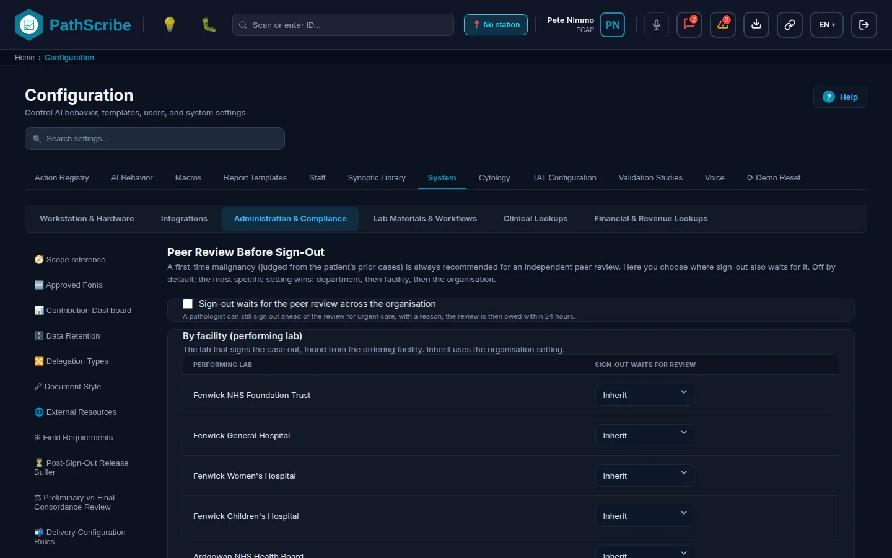
6. Field reference. Every change saves at once and shows "Saved".
| Field Name | Data Type / Format | Required/Optional | Description & Business Logic | System Default |
|---|---|---|---|---|
| Sign-out waits for the peer review across the organisation | Checkbox | Optional | The organisation-wide setting. | Off |
| Performing lab (By facility table): Sign-out waits for review | Choice per lab: Inherit, On, Off | Optional | Inherit uses the organisation setting. | Inherit |
| Department (By department table): Sign-out waits for review | Choice per subspecialty: Inherit, On, Off | Optional | Inherit uses the lab setting. | Inherit |
7. Permissions. Open the screen: screen:configuration:open. Change: config:peer-review:manage (high risk, audited; Admin and Lab Director).
Known limits. A server version exists (QUALITY_SETTINGS_API.md, QUALITY_API.md); the demonstration keeps the settings in the browser.
# Concordance Review Settings
Status: Built
1. Navigation: Configuration tab System > group Administration & Compliance 2. Maintenance item: Concordance Review Settings
3. Business purpose and scope. Controls the automatic comparison of a preliminary finding (for example a frozen section diagnosis) with the final diagnosis, and an optional review screen at sign-out. The pathologist always makes the concordance decision; these two settings only decide whether the system helps surface it.
4. Prerequisites and dependencies. None for the organisation default. A lab-level exception is set on the Facility Configuration edit window (Facility Dictionary).
5. Screen.

6. Field reference. Each switch saves at once and shows "Saved".
| Field Name | Data Type / Format | Required/Optional | Description & Business Logic | System Default |
|---|---|---|---|---|
| Enable Automatic Comparison | Switch | Optional | The system compares a preliminary finding with the matching final diagnosis and flags a real discordance for pathologist review. It never grades a result itself. | On |
| Require Review Screen at Sign-Out | Switch | Optional | An extra screen shows the preliminary-versus-final comparison before sign-out can finish. | On |
7. Permissions. Open the screen: screen:configuration:open. Change: config:concordance-review:manage (high risk; Admin and Lab Director).
Known limits. The setting is also stored per lab on the facility record. A server version exists (QUALITY_SETTINGS_API.md).
# Release Buffer
Status: Partial
1. Navigation: Configuration tab System > group Administration & Compliance 2. Maintenance item: Release Buffer (title on screen: Post-Sign-Out Release Buffer)
3. Business purpose and scope. A temporary hold between sign-out and genuine external release. While the report is held at Pending Release, the signing pathologist can recall and correct it without a formal amendment. These are the organisation-wide defaults. A performing lab can inherit them or set its own enabled, duration and STAT-bypass values on the Facility Configuration edit window; the watermark and print restriction are organisation-wide only.
What the code does today (verified in the source). The sign-out time that feeds turnaround reports is still recorded at sign-out. A separate "released at" time is recorded when the hold ends. The hold is ended by a timer that runs in any open PathScribe screen (and a background sweep on any open screen). A server-side scheduler that would release a case nobody has open is planned with the API server and is not built, so the release can be late when no screen is open.
4. Prerequisites and dependencies. None for the defaults. Lab overrides: Facility Dictionary.
5. Screen.

6. Field reference.
| Field Name | Data Type / Format | Required/Optional | Description & Business Logic | System Default |
|---|---|---|---|---|
| Enable Post-Sign-Out Release Buffer | Switch | Optional | A signed report is held at Pending Release for the buffer duration unless a bypass applies. | On |
| Buffer Duration | Whole number of minutes, 1 to 30 | Required | A value outside the range is clamped. | 10 |
| Bypass Buffer for STAT Cases | Switch | Optional | STAT cases release immediately. | On |
| Watermark Banner Text | Text | Optional | Drawn diagonally across any on-screen view of a Pending Release report and sent to the PDF renderer. PathScribe sends the text; it cannot verify the separate renderer draws it. | PENDING FINAL RELEASE - DO NOT DISTRIBUTE |
| Release Hold Print Policy | Choice: Allow, Warn and confirm, Supervisor override, Block | Optional | What happens when someone prints a report that is still in its release delay (Batch 654; it replaces the old "Restrict In-House Hardcopy Printing" switch). Allow prints at once. Warn and confirm warns that the copy is a watermarked draft and asks the person to confirm. Supervisor override lets only a person holding print:release-hold:override print, and they must give a reason; everyone else is refused. Block allows no printing until the report is released. Any copy that is printed still carries the pending-release watermark. An old setting of on became Warn and confirm; off became Allow. The setting is organisation-wide and is greyed out while the release delay is switched off. |
Warn and confirm |
7. Permissions. Open the screen: screen:configuration:open. Change: config:release-buffer:manage (high risk; Admin and Lab Director). Print a report during its release hold under Supervisor override: print:release-hold:override ("Print a report during its release hold (supervisor override)"; Lab Director and Admin hold it by default; give it to any other role that should print held reports).
Known limits. Partial because of the scheduler point above. The release-sweep server job that would release a report nobody has open is designed (docs/architecture/RELEASE_SWEEP_SERVER_JOB.md: one sweep every minute; a window that is missed releases late and the case is flagged) and is not built. When it is built it will never release a report that is under a surgical sign-out hold; it flags the case for a person instead. A server version of the settings exists (REPORTS_API.md).
# Country Signing Rules
Status: Built
1. Navigation: Configuration tab System > group Clinical Lookups. Internal only: a customer administrator sees the screen read-only. 2. Maintenance item: Country Signing Rules
3. Business purpose and scope. The national rules for each participation type: its local title, whether it may sign out, whether its work needs a countersign, and whether it may view the whole case. Every lab in the country inherits the rules unless it has its own exception under Participation Types. The rules encode national regulation, so only the ForMedrixAI platform administrator can change them. Each save needs a reason and is written to the audit log.
4. Prerequisites and dependencies. The rows are the participation types.
5. Screen.

6. Field reference.
| Field Name | Data Type / Format | Required/Optional | Description & Business Logic | System Default |
|---|---|---|---|---|
| Country | Picklist: US, CA, GB (England and Wales), GB (Scotland), GB (Northern Ireland), IE, AU, NZ, KR, BE, NL, DE, FR, ES | Required | Switching with unsaved edits is blocked ("Save or discard your changes before switching country"). | GB (England and Wales) |
| Offer in this country / Stop offering here | Button on a card whose type is not global | Optional | Adds or removes the type for the country. Removing the last country is refused (deactivate the type instead). | Not applicable |
| Local title | Text | Optional | The country's name for the type. Placeholder shows the platform title. | Blank (platform title) |
| Can finalise / sign out | Choice: Platform default (value), Yes, No | Optional | Whether the type may sign out. | Platform default |
| Requires countersign | Choice: Platform default, Yes, No | Optional | Whether the type's work needs a countersign. | Platform default |
| Can view whole case | Choice: Platform default, Yes, No | Optional | Platform default | |
| Regulatory basis | Multi-line text | Optional | The regulator or college rule the setting follows. | Blank |
| Reason for the change | Text | Required to save | Error "Enter a reason for the change." Shown with "Last changed by (name) on (date). Reason". | Blank |
| Discard changes, Save changes | Buttons | Not applicable | Save changes reports a partial failure ("types saved before it were kept and audited"). | Not applicable |
7. Permissions. Open the screen: screen:configuration:open. Change: platform:signing-rules:manage (platform-only, high risk; ForMedrixAI super-administrator only). Admin and Lab Director cannot change it.
Known limits. Contract in docs/architecture/LAB_DICTIONARIES_API.md.
# Revision Reasons
Status: Built
1. Navigation: Configuration tab System > group Administration & Compliance 2. Maintenance item: Revision Reasons
3. Business purpose and scope. Lists the reasons a pathologist picks when amending or correcting a released report, and lets the administrator mark which mean the original report may have affected clinical management. Releasing a revision for a marked reason recommends a CAPA to the QA lead. This screen only switches the marker; it does not add or rename reasons.
4. Prerequisites and dependencies. None.
5. Screen.

6. Field reference.
| Field Name | Data Type / Format | Required/Optional | Description & Business Logic | System Default |
|---|---|---|---|---|
| Amendment reasons (diagnostic revision), Correction reasons (clerical) | Two lists | Not applicable | Seed reasons. Amendment: Diagnostic Interpretation Revision, Surgical Margin Re-evaluation, Pathologic Staging Change, Specimen/Site Reclassification. Correction: Typographical Error, Patient/Demographic Information Update, Ordering Provider Update, Specimen Labeling Correction. | Not applicable |
| Reason, Description | Text | Not applicable | Read only here. Inactive reasons show an "Inactive" tag. | Not applicable |
| Clinically significant | Switch per reason | Optional | On shows "Recommends a CAPA", off shows "No CAPA". | On for the four amendment reasons, off for the four correction reasons |
7. Permissions. Open the screen: screen:configuration:open. Change: config:revision-reasons:manage (high risk; Admin and Lab Director).
Known limits. In the product the starting values are: diagnosis, margin, stage and tissue reclassification on; clerical corrections off (revisionReasonRules.ts). The service allows adding, editing, deactivating and reactivating reasons, but this screen has no button for them; that is listed for Pete in open-questions/ch4.md. Contract: docs/architecture/LAB_DICTIONARIES_API.md.
# Bench Reasons
Status: Built (Batch 736)
1. Navigation: Configuration tab System > group Administration & Compliance 2. Maintenance item: Bench Reasons
3. Business purpose and scope. The reasons staff tap at the bench instead of typing, in five groups: Microtome: Block exhausted; Add-On Orders: order or answer on an exhausted block (the builder's reason and the pathologist's answer to a flag, including Approve Destructive Cutting); Batch Management: Abort Batch; Batch Management: complete with exceptions; Batch Management: acknowledge a cold-chain excursion. Each lab words them its own way. A reason keeps its code when it is reworded, and every record and audit entry stores the code beside the words, so reports (for example the Reconciliation exceptions report's Reason code column) count a reason the same way before and after it is reworded. Staff may add a note to a tapped reason; with no reason tapped, a typed note alone is accepted where the lab's Field Requirements allow it.
4. Prerequisites and dependencies. None. PathScribe ships default reasons in all six languages.
5. Screen.
6. Field reference.
| Field Name | Data Type / Format | Required/Optional | Description & Business Logic | System Default |
|---|---|---|---|---|
| Wording | Text, with Reword | Required to reword | The words staff see. A default reason shows "Default wording, shown in each user's language" and appears in each person's language; once reworded it shows "Your lab's wording, shown as entered" and appears exactly as typed, in every language. Must differ from the group's other active reasons. | The defaults below |
| Code | Text | Not applicable | Read only. A default reason's code (for example BE_NO_TISSUE); a reason the lab adds gets a code automatically. Never changes. |
Not applicable |
| ↑ / ↓ | Buttons | Optional | The order on the bench. | Shipped order |
| Use the default wording | Button | Optional | Puts a reworded default reason back to its shipped, translated wording. | Not applicable |
| Retire / Restore | Button | Optional | A retired reason is no longer offered; its code stays in old records. | Active |
| Add reason | Text and button | Optional | A new reason for the group, in your lab's words, placed last. | Not applicable |
Default reasons: Block exhausted: No tissue left in the block (BE_NO_TISSUE), Only a few sections left (BE_FEW_SECTIONS), Cannot get a full face (BE_INCOMPLETE_FACE), Block damaged (BE_BLOCK_DAMAGED). Exhausted block on Add-On Orders: Requested by the pathologist (AE_PATHOLOGIST_REQUEST), Last material available (AE_LAST_MATERIAL), Needed to complete the diagnosis (AE_DIAGNOSIS_NEEDED). Abort Batch: Created in error (BA_CREATED_IN_ERROR), Wrong container or rack (BA_WRONG_CONTAINER), Equipment failure (BA_EQUIPMENT_FAILURE), Run cancelled by the lab (BA_RUN_CANCELLED). Complete with exceptions: Items accounted for elsewhere (BO_ACCOUNTED_ELSEWHERE), Checked by hand: barcode would not scan (BO_SCANNED_BY_HAND), Approved by the supervisor (BO_SUPERVISOR_APPROVED), Label damaged, identity checked by eye (BO_LABEL_DAMAGED). Cold chain: Temperature back in range on arrival (CC_BACK_IN_RANGE), Packaging intact; logger fault (CC_LOGGER_FAULT), Courier delay; contents checked (CC_COURIER_DELAY).
7. Permissions. Open the screen: screen:configuration:open. Change: config:bench-reasons:manage (high risk; Admin and Lab Director).
Known limits. One list for the whole organisation; a facility cannot yet have its own wording. A reworded reason is shown as typed in every language. Contract: docs/architecture/LAB_DICTIONARIES_API.md (the Reason Dictionary, categories BENCH_*).
# Tumor Board Rules
Status: Built
1. Navigation: Configuration tab System > group Administration & Compliance 2. Maintenance item: Tumor Board Rules (title on screen: Tumor Board Auto-Flag Rules)
3. Business purpose and scope. At sign-out PathScribe lists a case for a tumor board when a rule matches the signed report, and records why. There are four board names: Breast MDT, GI MDT, Thoracic MDM and Gyn-Onc. Two kinds of rule exist. A margin rule lists the case when a margin is closer than a threshold. A diagnosis and biomarker rule lists the case when every criterion matches. Enterprise values can be overridden or turned off for one facility. A separate batching cut-off locks a board's case list before its meeting.
4. Prerequisites and dependencies. Facility overrides use the Facility Dictionary. Criteria are matched by field label and wording in the signed report, so test a rule on a real report template before relying on it.
5. Screen.

6. Field reference. Errors show above the cards.
Enterprise baseline (margin rules)
| Field Name | Data Type / Format | Required/Optional | Description & Business Logic | System Default |
|---|---|---|---|---|
| Rule list (board and description) | One row per board | Not applicable | Four seed rules, one per board, "Close or positive margin (< 1mm)". | Not applicable |
| Margin threshold (mm) | Number greater than 0 | Required | Error "Enter a margin threshold greater than 0." | 1 |
| Active | Checkbox | Optional | Turns the rule off for the enterprise. | On |
| Save | Button | Not applicable | Enabled only after a change. | Not applicable |
Diagnosis and biomarker rules
| Field Name | Data Type / Format | Required/Optional | Description & Business Logic | System Default |
|---|---|---|---|---|
| Rule description | Text, 1 to 80 characters | Required | The reason recorded when a case is listed. | Blank |
| Board | Picklist of the four boards | Required | Error "Choose a board." | Not applicable |
| Criterion (n) type | Choice: Diagnosis contains, Biomarker result, Margin below (mm) | Required | Every criterion must match. A rule has 1 to 6 criteria and at least one diagnosis or biomarker criterion. | Not applicable |
| Diagnosis text for criterion (n) | Text, 2 to 60 characters | Required for a diagnosis criterion | Blank | |
| Biomarker; Result for criterion (n) | Two text boxes, each up to 60 characters | Required for a biomarker criterion | Blank | |
| Margin threshold (criterion) | Number greater than 0 | Required for a margin criterion | Blank | |
| Active | Checkbox | Optional | On | |
| + Add rule, + Add criterion, Remove criterion, Remove, Save, Cancel | Buttons | Not applicable | At most 25 diagnosis and biomarker rules ("The limit of 25 ... is reached"). | No rules |
Batching cut-off
| Field Name | Data Type / Format | Required/Optional | Description & Business Logic | System Default |
|---|---|---|---|---|
| Cut-off (hours before meeting) | Number, 0 or more | Required | Scheduling changes are refused inside this window. Presenter self-assignment still works up to and after the meeting. | 48 |
Facility overrides
| Field Name | Data Type / Format | Required/Optional | Description & Business Logic | System Default |
|---|---|---|---|---|
| Facility | Picklist | Required | Error "Choose a facility." | First facility |
| Rule | Picklist of the margin rules and the criteria rules | Required | The rule to override. | First rule |
| Margin threshold (mm) | Number greater than 0 | Required for a margin rule | Not used for a criteria rule. | The rule's value |
| Active | Checkbox | Optional | Off disables the rule at that facility (list shows "disabled"). | On |
| Route to board | Picklist, or "The rule's own board" | Optional | Sends the case to a different board at that facility. | The rule's own board |
| Save, Cancel, Remove | Buttons | Not applicable | Not applicable |
7. Permissions. Open the screen: screen:configuration:open. Change: config:tumor-board-rules:manage (high risk; Admin and Lab Director).
Known limits. Contract: docs/architecture/TUMOR_BOARD_API.md. The board list is fixed in the product.
# Biopsy-Resection Correlation
Status: Partial
1. Navigation: Configuration tab System > group Administration & Compliance 2. Maintenance item: Biopsy-Resection Correlation (title on screen: Biopsy-to-resection correlation window)
3. Business purpose and scope. How long after a surgical biopsy a later resection for the same patient is looked for as a correlation candidate, and which date that window starts from. A resection matches when it is collected or received inside the window. Set it for the enterprise, for each jurisdiction and for each facility; the most specific setting wins. The screen is the same control as Cytology-Histology Correlation, on the surgical settings.
4. Prerequisites and dependencies. Facility overrides use the Facility Dictionary.
5. Screen.
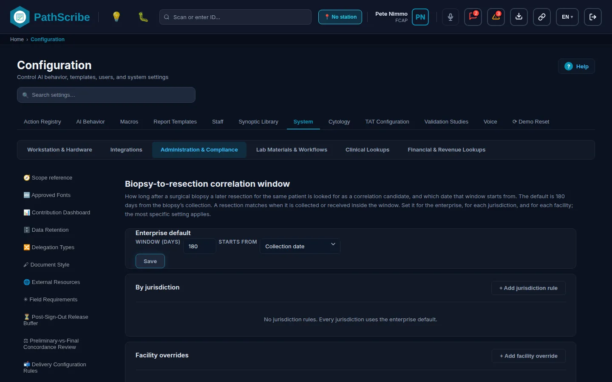
6. Field reference.
| Field Name | Data Type / Format | Required/Optional | Description & Business Logic | System Default |
|---|---|---|---|---|
| Enterprise default: Window (days) | Whole number 1 to 1825 | Required | Error "Enter a whole number of days from 1 to 1825." | 180 |
| Enterprise default: Starts from | Choice: Collection date, Date received in the lab, (sign-out) | Required | The date the window starts from. The sign-out choice is labelled "Cytology sign-out" on screen even here. | Collection date |
| Save | Button | Not applicable | Not applicable | |
| By jurisdiction: + Add jurisdiction rule | Picklist of jurisdictions without a rule, Window (days), Starts from; Save, Cancel, Remove | Optional | A rule per jurisdiction. List shows "N days from (anchor)". | None |
| Facility overrides: + Add facility override | Facility picklist, Window (days), Starts from; Save, Cancel, Remove | Optional | "Choose a facility." is the error when none is chosen. | None |
7. Permissions. Open the screen: screen:configuration:open. Change: config:biopsy-resection-correlation:manage (high risk; Admin and Lab Director).
Known limits. Partial: the service is a browser-store mock exported from services/index.ts; there is no server version. The cytology window has one (Built). The "Cytology sign-out" label appearing on the biopsy screen is listed in open-questions/ch4.md.
# Cytology-Histology Correlation
Status: Built
1. Navigation: Configuration tab Cytology > Correlation Window 2. Maintenance item: Correlation Window (title on screen: Cyto-histology correlation window)
3. Business purpose and scope. How long after an abnormal cervical cytology result a later biopsy is looked for as a correlation candidate, and which date the window starts from. The clinical clock starts when the cells are collected, so collection is the default. A biopsy matches when it is collected or received inside the window. Set it for the enterprise, for each jurisdiction and for each facility; the most specific wins. The surgical equivalent is Biopsy-Resection Correlation.
4. Prerequisites and dependencies. Facility overrides use the Facility Dictionary.
5. Screen.
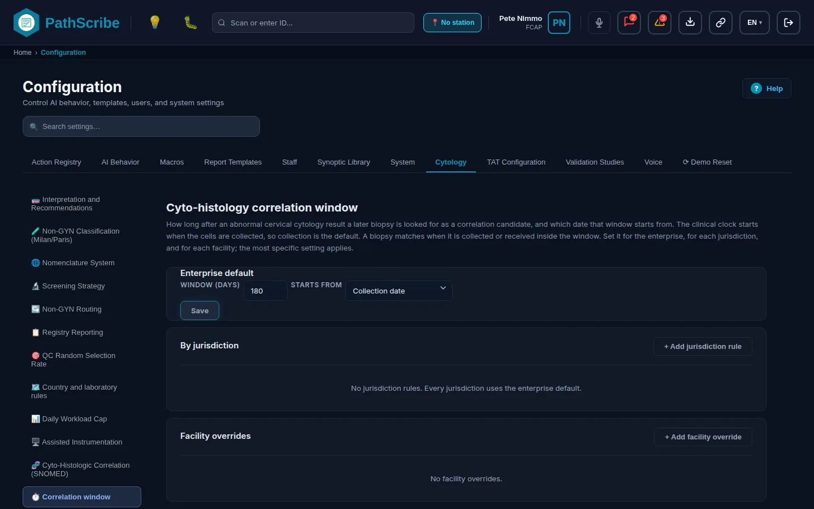
6. Field reference.
| Field Name | Data Type / Format | Required/Optional | Description & Business Logic | System Default |
|---|---|---|---|---|
| Enterprise default: Window (days) | Whole number 1 to 1825 | Required | Error "Enter a whole number of days from 1 to 1825." | 180 |
| Enterprise default: Starts from | Choice: Collection date, Date received in the lab, Cytology sign-out | Required | Error "Choose the date the window starts from." | Collection date |
| Save | Button | Not applicable | Not applicable | |
| By jurisdiction: + Add jurisdiction rule | Jurisdiction picklist (only those without a rule), Window (days), Starts from; Save, Cancel, Remove | Optional | List shows "N days from (anchor)". With none: "Every jurisdiction uses the enterprise default." | None |
| Facility overrides: + Add facility override | Facility picklist, Window (days), Starts from; Save, Cancel, Remove | Optional | Error "Choose a facility." | None |
7. Permissions. Open the screen: screen:configuration:open. Change: config:cytology-histology-correlation:manage (high risk; Admin and Lab Director).
Known limits. Contract: docs/architecture/CYTOLOGY_API.md (ICytologyHistologyCorrelationSettingsService).
# Follow-Up Tracking
Status: Partial
1. Navigation: Configuration tab System > group Administration & Compliance 2. Maintenance item: Follow-Up Tracking
3. Business purpose and scope. Sets when the lab is warned about an expected follow-up specimen that has not arrived, and whether staff may e-mail the ordering clinician about it. The follow-up windows themselves are set on Cytology-Histology Correlation and Biopsy-Resection Correlation. A clinician e-mail is never sent automatically: a user reviews each one and presses Send.
4. Prerequisites and dependencies. Facility overrides use the Facility Dictionary. Without the correlation windows there is nothing to warn about.
5. Screen.
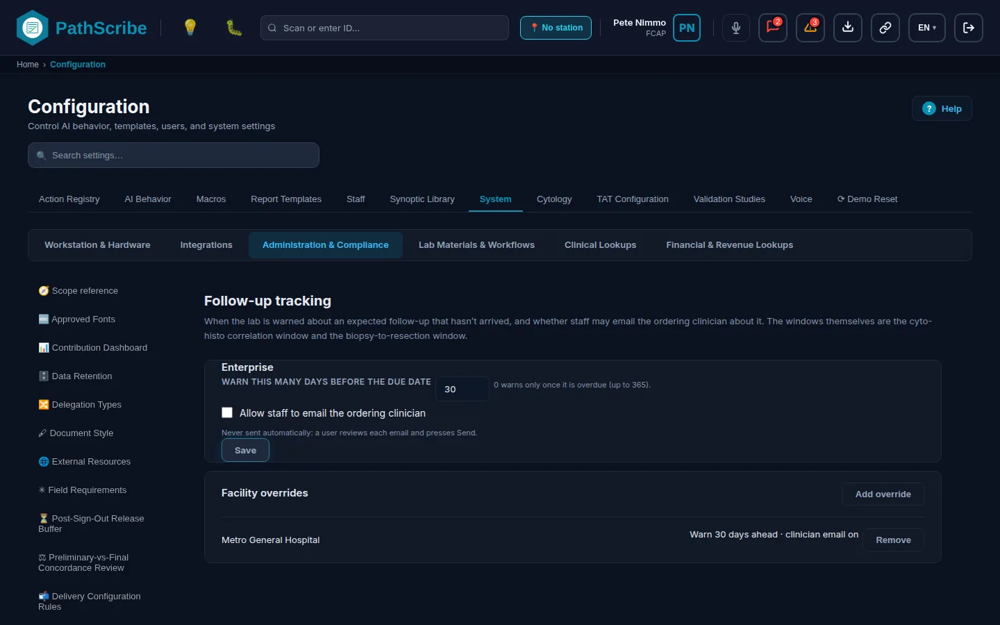
6. Field reference. The enterprise card and each facility override use the same four fields.
| Field Name | Data Type / Format | Required/Optional | Description & Business Logic | System Default |
|---|---|---|---|---|
| Warn this many days before the due date | Whole number 0 to 365 | Required | 0 warns only once it is overdue. Error "Enter a whole number of days from 0 to 365." | 30 |
| Allow staff to email the ordering clinician | Checkbox | Optional | Adds the "Email ordering clinician" action. | Off |
| Email subject (empty = built-in wording) | Text up to 200 characters | Optional | Built-in: "Follow-up specimen requested: {{accession}}". | Blank |
| Email message (empty = built-in wording) | Text up to 4,000 characters | Optional | Only these placeholders are filled: accession, windowStart, dueDate, clinicianName, labName, senderName. There is deliberately no placeholder for the patient name or diagnosis. An unknown placeholder is refused. | Blank |
| Save | Button | Not applicable | Disabled while a value is invalid. | Not applicable |
| Facility overrides: Facility, Add override, Remove | Picklist and buttons | Optional | A facility override lists as "Warn N days ahead, clinician email on/off". Every facility without one uses the enterprise card. | None |
7. Permissions. Open the screen: screen:configuration:open. Change: config:follow-up-tracking:manage (high risk; Admin and Lab Director).
Known limits. Partial: the settings are saved by a browser-store service (followUpSettings.ts); the server follow-up service returns settings with its list but has no write for them. The follow-up queue is in docs/architecture/ under the quality API.
# Intraoperative Critical Results
Status: Built
1. Navigation: Configuration tab System > group Lab Materials & Workflows 2. Maintenance item: Intraoperative Critical Results (title on screen: Intraoperative critical results)
3. Business purpose and scope. A dictionary of frozen results that should reach the operating surgeon directly. A specimen matches an entry by its preliminary category or by a term in its frozen diagnosis (negated phrases are ignored). A match flags the verbal report as a critical result, which the pathologist confirms or clears. Entries are never deleted; they are deactivated.
4. Prerequisites and dependencies. None. The categories are the four preliminary categories of the Intraoperative worklist.
5. Screen.

6. Field reference.
| Field Name | Data Type / Format | Required/Optional | Description & Business Logic | System Default |
|---|---|---|---|---|
| Entry list | Name, description, "Categories: ... Terms: ...", Inactive tag | Not applicable | Four seed entries: Malignancy on frozen section (category Malignant); Positive or close margin (terms); Atypical or suspicious for malignancy (category Atypical / suspicious); Positive lymph node (terms). | Not applicable |
| Show inactive entries | Switch | Optional | Off | |
| + Add entry, Edit, Deactivate / Reactivate | Buttons | Not applicable | The window is below. Without the permission the screen says "You can see this dictionary but not change it." | Not applicable |
Add critical result and Edit critical result window
| Field Name | Data Type / Format | Required/Optional | Description & Business Logic | System Default |
|---|---|---|---|---|
| Name | Text | Required | Message "Give it a name and at least one term or category." until a name and a match exist. | Blank |
| Description | Text | Optional | Blank | |
| Terms | Text, one per line or comma separated | Required if no category | Matched as whole words in any case. | Blank |
| Preliminary categories that match | Checkboxes: Benign, Malignant, Atypical / suspicious, Deferred | Required if no term | None ticked |
7. Permissions. Open the screen: screen:configuration:open. Change: config:intraop-critical-results:manage (high risk, audited; Admin only, Lab Director does not hold it by default; checked in the service).
Known limits. Contract: docs/architecture/INTRAOP_CRITICAL_RESULTS_API.md. This screen is not in the section-to-capability table (configSectionAccess.ts), so it relies on the service check alone; the screen opens read-only for a person without the permission.
# OR Suite Terminals
Status: Built
1. Navigation: Configuration tab System > group Lab Materials & Workflows 2. Maintenance item: OR Suite Terminals
3. Business purpose and scope. Registers the wall or desk display in each operating-room suite that shows the Intraoperative Dashboard. Each terminal is bound to one existing Location, so two facilities can each have an "OR 1" without a name clash. A terminal can be marked eligible for the Multi-Suite Overview (for a charge nurse, lab liaison or roving circulator). Access is by a display token (below), not by a person's login.
4. Prerequisites and dependencies. Facilities and their locations (the room list) come from the Facility Dictionary (the Locations on the Facility edit window). The Location picklist stays empty until a facility is chosen.
5. Screen.

6. Field reference.
| Field Name | Data Type / Format | Required/Optional | Description & Business Logic | System Default |
|---|---|---|---|---|
| Terminal list | Name, location, "Multi-Suite eligible", Inactive tag | Not applicable | Not applicable | |
| + Add Terminal, Edit, Deactivate / Reactivate, Show inactive | Buttons and switch | Not applicable | Show inactive off | |
| Display token | Button per terminal | Not applicable | Opens the window below. | Not applicable |
Add OR Suite Terminal and Edit OR Suite Terminal window
| Field Name | Data Type / Format | Required/Optional | Description & Business Logic | System Default |
|---|---|---|---|---|
| Terminal / Station Identity | Text (example OR-Suite-04) | Required | Blank | |
| Facility | Picklist | Required | Selecting it loads that facility's locations. | None |
| Location (OR/Suite) | Picklist of the facility's locations | Required | The terminal is bound to this Location. | None |
| Can view Multi-Suite Overview (charge nurse, lab liaison, roving circulator) | Checkbox | Optional | Off |
Display token window (shared with Display Profiles)
| Field Name | Data Type / Format | Required/Optional | Description & Business Logic | System Default |
|---|---|---|---|---|
| Token state | Text | Not applicable | "No token issued. This display cannot be started.", "Token ending (hint) is valid until (date)", "Token expired on (date)", or "Token revoked on (date)". | Not applicable |
| Valid for | Choice: 30, 90, 180, 365, 730 days | Required | Length of validity of a new token. | 365 days |
| Issue token / Issue new token | Button | Not applicable | Shows the new token once ("New token - copy it now"; it will not be shown again). Only a fingerprint is stored. Issuing a new token stops the old one at once. | Not applicable |
| Revoke | Button | Not applicable | Blanks the display within a minute. Disabled when already revoked. | Not applicable |
7. Permissions. Open the screen: screen:configuration:open. Add, edit, deactivate: config:or-suite-terminals:manage. Issue or revoke a token: the same permission (high risk; Admin and Lab Director).
Known limits. Contract: docs/architecture/DISPLAY_ACCESS_API.md (token calls). The Intraoperative Dashboard that the terminal shows is a workbench screen outside this chapter's list.
# Display Profiles
Status: Built
1. Navigation: Configuration tab System > group Lab Materials & Workflows 2. Maintenance item: Display Profiles (title on screen: Display Profiles (Facility Ops Dashboards))
3. Business purpose and scope. A registry of the wall displays that show the Facility Ops Dashboard. Each profile binds a display to one performing lab and to one or more of five department views, and can cycle between the views on a timer. The Open Facility Ops Dashboard button opens the dashboard page. No physical hardware binding is checked or enforced: the device field is a note. Access to a display is controlled by its Display Token (see the window under OR Suite Terminals).
4. Prerequisites and dependencies. The performing labs come from the Facility Dictionary.
5. Screen.

6. Field reference.
| Field Name | Data Type / Format | Required/Optional | Description & Business Logic | System Default |
|---|---|---|---|---|
| Profile list | Name, lab, views, interval | Not applicable | Not applicable | |
| Open Facility Ops Dashboard | Button | Not applicable | Opens /facility-ops-dashboard. |
Not applicable |
| + Add Display Profile, Edit, Deactivate / Reactivate, Show inactive | Buttons and switch | Not applicable | Show inactive off | |
| Display token | Button per profile | Not applicable | The token window described under OR Suite Terminals. | Not applicable |
Add Display Profile and Edit Display Profile window
| Field Name | Data Type / Format | Required/Optional | Description & Business Logic | System Default |
|---|---|---|---|---|
| Display Name | Text (example "Histology Bench 3 - Wall Display") | Required | Blank | |
| Performing Lab | Picklist of active performing labs | Required | None | |
| Assigned Dashboard View(s) | Checkboxes: Grossing & Intake; Embedding & Microtome; Staining & IHC; Send-Out & Reference Laboratory; Diagnostic Sign-Out / Scanner; Stations (Batch 727) | Required (at least one) | More than one view makes the profile cycle. | None ticked |
| Time limit X (minutes) | Whole number, 15 to 1440 | Optional; shown when Embedding & Microtome or Stations is ticked | Batch 727 (Lab Workflow & Batch spec, Decision 2): one time per lab. An add-on waiting longer turns red and is pinned to the top of Embedding & Microtome; it turns amber in the last 30 minutes before (half of X when X is an hour or less). The Stations view counts carriers and add-ons past it. Outside 15 to 1440 the profile can't be saved. | Blank (120 minutes) |
| Not-scanned warning (minutes) | Whole number, 30 to 10080 | Optional; shown when Stations is ticked | Batch 729 (spec 7.5): the Stations view lists cassettes, blocks and slides not scanned at any station for longer than this (finished items left out), as a tile and alerts. Outside 30 to 10080 the profile can't be saved. | Blank (240 minutes) |
| Show carriers for these purposes | Check boxes, one per active batch purpose | Optional; shown when a view with carriers is ticked (all but Diagnostic Sign-Out / Scanner) | Batch 728 (Decision 4a): only carriers of the ticked purposes are shown and counted. None ticked shows every purpose. A carrier made before Batch 728 counts as Routine. Add-on orders are not carriers and always show. | None ticked (all) |
| Carousel Interval (seconds) | Whole number (example 20) | Optional | Time per view when more than one is assigned. | Blank |
| Device Token / MAC / IP (optional) | Text | Optional | An asset note only; access is controlled by the Display Token. | Blank |
7. Permissions. Open the screen: screen:configuration:open. Add, edit, deactivate, issue or revoke a token: config:display-profiles:manage (high risk; Admin and Lab Director).
Known limits. Contract: docs/architecture/INTRAOP_OPS_API.md and DISPLAY_ACCESS_API.md. The registry is data only: PathScribe does not verify that a physical display matches a profile.
# QA Configuration Center
Status: Built
1. Navigation: Configuration tab System > group Administration & Compliance 2. Maintenance item: QA Configuration Center
3. Business purpose and scope. Defines the quality-assurance activities a lab runs. An activity is built on one of two archetypes: Review-with-Outcome (a case is reviewed and graded, for example Frozen vs Final Correlation) or Supervision / Assignment (a provider is supervised over a case count or period, for example FPPE). Standard activities are curated by PathScribe for the lab's jurisdiction; they cannot be switched off or turned into custom ones, and only their sampling, CAPA trigger and similar settings can be configured. Custom activities are the lab's own; the faster route is to duplicate a standard or custom activity, because its review fields come ready-made. Nothing opens a CAPA automatically: a trigger only recommends one to the QA lead, who confirms or dismisses it.
Standard review activities include: Frozen vs Final Correlation, Cytology-Histology Correlation, Abnormal/Critical Finding Confirmation, GYN Cytology Secondary Screening, Surgical Post-Sign-Out Peer Review, Surgical Biopsy-to-Resection Correlation, Pre-Sign-Out Peer Review, Clinical-Pathologic Correlation and Outside Consult Correlation. The list that shows depends on the jurisdiction.
4. Prerequisites and dependencies. The CAPA trigger names a deficiency type from Specimen Deficiencies. Expected case mix uses Subspecialties.
5. Screen.

6. Field reference.
| Field Name | Data Type / Format | Required/Optional | Description & Business Logic | System Default |
|---|---|---|---|---|
| Standard, Custom tabs | Tabs | Not applicable | Standard shows only the activities that apply to the jurisdiction ("No Standard activities apply to (jurisdiction)" otherwise). | Standard |
| Activity list | Name, Archetype, Jurisdictions ("All" or a list), Sampling %, CAPA Trigger, Status, Actions | Not applicable | CAPA Trigger reads "(severities) to (deficiency)" with "(after release only)". | Not applicable |
| Configure (standard), Edit (custom), Duplicate, Deactivate / Reactivate | Row buttons | Not applicable | Deactivate is refused for a standard activity. | Not applicable |
| + Add Custom Activity | Button, then a picker | Not applicable | Choose New Review-with-Outcome Activity or New Supervision/Assignment Activity, or Cancel. The picker recommends duplicating instead. | Not applicable |
Configure, Edit and Duplicate window
| Field Name | Data Type / Format | Required/Optional | Description & Business Logic | System Default |
|---|---|---|---|---|
| Name | Text | Required | Read only on a standard activity. A duplicate starts as "(name) (Copy)". | Blank |
| Description | Text | Optional | Read only on a standard activity. | Blank |
| Review Fields | Field editor (review archetype) | Required (at least one field) | Read only on a standard activity and on a duplicate ("from Duplicate - read-only here"). Each field has a label, a type (Short text, Long text, Number, Single choice, Multiple choice, Drop-down list), a hint, Required, and options for a choice type; fields can be moved up and down. A saved field can be renamed or made optional but not removed or retyped, and a saved option cannot be removed: past reviews keep their answers. New fields can be added at any time. | A single Notes field |
| Capture Teaching & Onboarding Feedback | Checkbox (review archetype) | Optional | Disabled on a standard activity. | Off |
| Sampling Percentage | Number 0 to 100 (review archetype) | Optional | Fraction of eligible cases randomly selected. Blank means no automatic sampling. | Blank |
| CAPA Trigger: recommend a CAPA when | Checkboxes: low, medium, high (discordance severity) | Optional | Discordant severity is always recorded; this only decides whether a CAPA is recommended. | None |
| CAPA Trigger: Deficiency type | Picklist from Specimen Deficiencies, or "No deficiency type selected" | Optional | The deficiency the recommendation names. | None |
| Only for reviews after the report was released | Checkbox | Optional | Off | |
| Expected Case Mix (optional) | Per-subspecialty minimum counts (supervision archetype) | Optional | "+ Add subspecialty target..." adds a row with Minimum count and Remove. Empty shows real coverage only, with no expectation. | Empty |
| Status | Active / Inactive switch | Optional | Active | |
| Add / Create Duplicate / Save Changes, Cancel | Buttons | Not applicable | Not applicable |
7. Permissions. Open the screen: screen:configuration:open. Change: config:qa-types:manage (high risk; Admin and Lab Director; the standard-activity lock is also enforced in the service).
Known limits. Contract: docs/architecture/QUALITY_API.md.
# QA Trend Policy
Status: Built
1. Navigation: Configuration tab System > group Administration & Compliance 2. Maintenance item: QA Trend Policy (title on screen: Discordance Trend Policy)
3. Business purpose and scope. Decides when repeated major discordances are flagged to the Lab Director, either for a pathologist's reviewed work or for a specimen type whoever read it. A pattern is a recommendation: it never opens a CAPA. The organisation policy applies to every performing lab that does not have its own; reviews are judged by the policy of the lab that performed the case.
4. Prerequisites and dependencies. Reviews come from the QA activities on QA Configuration Center. Lab policies use the performing labs in the Facility Dictionary.
5. Screen.

6. Field reference. The same fields are in the organisation block and in each performing lab that has "(lab) has its own policy" ticked.
| Field Name | Data Type / Format | Required/Optional | Description & Business Logic | System Default |
|---|---|---|---|---|
| Watch each pathologist's reviewed work | Checkbox | Optional | On | |
| Watch each specimen type (a process signal) | Checkbox | Optional | On | |
| Window (months) | Whole number 1 to 36 | Required | How far back reviews are counted. | 3 |
| Minimum reviews in the window | Whole number, at least 1 | Required | Below this nothing is judged; it protects low-volume and part-time staff. | 20 |
| Severities that count as major | Checkboxes: low, medium, high | Required (at least one) | The reviewer's severity on a discordant review. | high |
| Major discordances that trigger | Whole number | Required | 0 turns this test off. | 3 |
| Major-discordance rate that triggers (%) | Number 0 to 100 | Required | Of the reviews in the window. 0 turns this test off. With both tests at 0 the policy is refused ("Set a count or a rate"). | 10 |
| When a threshold is crossed | Choice: Ask the Lab Director for a decision, Note it on the trend list only | Required | Neither choice opens a CAPA. | Ask the Lab Director |
| (Lab) has its own policy | Checkbox per performing lab | Optional | Ticking it reveals the same fields for that lab. | Off |
| Save policy | Button | Not applicable | Shows "Saved" or the reason it did not save. | Not applicable |
7. Permissions. Open the screen: screen:configuration:open. Change: config:qa-trend-policy:manage (high risk; Admin and Lab Director).
Known limits. Contract: docs/architecture/QUALITY_SETTINGS_API.md.
# TAT Configuration (tab)
Status: Built
1. Navigation: Configuration tab TAT Configuration (opens for people who hold config:tat-targets:manage; the tab is wrapped in a section gate).
2. Maintenance item: TAT Configuration (title on screen: TAT Configuration)
3. Business purpose and scope. Sets the turnaround time targets per type, urgency, facility, specimen and subspecialty. The most specific matching rule wins when a case is measured. A case falls back to a built-in system default when no custom rule matches. Targets drive the on-time and late marks in Search, the quality dashboards and the Intraoperative board (frozen section warning time).
Resolution order (most specific first): Facility + Specimen + Urgency; Facility + Specimen; Facility + Subspecialty + Urgency; Facility + Subspecialty; Facility only; Specimen only; System default (fallback). A Resolution Simulator shows which rule wins for a given case.
4. Prerequisites and dependencies. The scope pickers come from the Facility Dictionary, the Specimen Dictionary and Subspecialties. QA activities appear as extra TAT types once they exist on QA Configuration Center.
5. Screen.
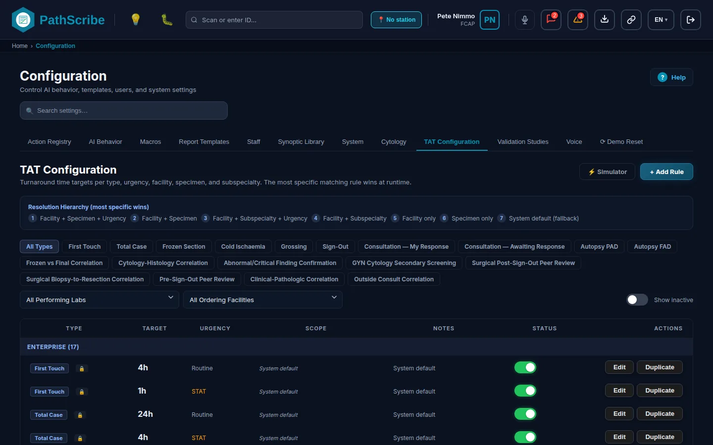
6. Field reference.
| Field Name | Data Type / Format | Required/Optional | Description & Business Logic | System Default |
|---|---|---|---|---|
| Rule list | Table: Type, Target, Urgency, Scope, Notes, Status, Actions | Not applicable | Rules grouped as "Enterprise (n)" and by performing lab. A row shows the target, urgency (STAT, Routine, Any), scope, "warn at N min" for frozen section, and "Role: ..." for consultation types. | Not applicable |
| Type filter | Picklist: All Types, each TAT type, each QA activity | Optional | All Types | |
| Filter by Performing Lab, Filter by Ordering Facility | Picklists | Optional | All | |
| Show inactive | Switch | Optional | Off | |
| + Add Rule, Edit, Duplicate, Delete | Buttons | Not applicable | Delete is refused for a system default; switch it off instead. Duplicate starts a new rule from an existing one. | Not applicable |
| Simulator | Button and panel | Not applicable | See the simulator table below. | Not applicable |
Add TAT Rule and Edit TAT Rule window
| Field Name | Data Type / Format | Required/Optional | Description & Business Logic | System Default |
|---|---|---|---|---|
| TAT Type | Picklist in two groups. Clinical Workflow: First Touch, Total Case, Frozen Section, Cold Ischaemia, Grossing, Sign-Out, Consultation (My Response), Consultation (Awaiting Response), Autopsy PAD, Autopsy FAD. QA Activities: each activity from the QA Configuration Center | Required | Error "TAT type is required". | First Touch |
| Target Hours | Number, step 0.25, at least 0.1 | Required | Error "Target hours must be greater than 0". Shows "= (formatted)". | None |
| Warn when this many minutes remain | Whole number of minutes | Optional | Frozen Section only. The Intraop board turns amber at this point. Must be above 0 and below the target. | 5 |
| Urgency | Choice: Any (Routine + STAT), Routine only, STAT only | Optional | Any | |
| Applies To: Performing Lab | Picklist or "All performing labs" | Optional | All | |
| Applies To: Ordering Facility | Picklist or "All ordering facilities" | Optional | All | |
| Applies To: Specimen type | Picklist or "All specimen types" | Optional | All | |
| Applies To: Subspecialty | Picklist or "All subspecialties" | Optional | All | |
| Applies To: Role | Choice: All roles, Resident, Fellow, Pathologist, External | Optional | Used by the consultation types. | All |
| Admin Notes | Text | Optional | No effect on matching. | Blank |
| Status | Active / Inactive | Optional | An active rule with the same combination of type and urgency is refused ("An active rule already exists for this combination"). | Active |
| Add Rule / Save Changes, Cancel | Buttons | Not applicable | A live line says what the rule applies to, or "This is a system default - applies to all cases". | Not applicable |
Resolution Simulator
| Field Name | Data Type / Format | Required/Optional | Description & Business Logic | System Default |
|---|---|---|---|---|
| Performing lab, Ordering facility, Specimen, Subspecialty | Picklists ("No specific ...") | Optional | The case to test. | None |
| Urgency | Choice | Optional | Routine | |
| Result per type | Badge for each type, the winning rule, "system default" or "custom rule", or "No matching rule" | Not applicable | Not applicable |
The built-in defaults (ids starting sys-, hours): First Touch 4 routine, 1 STAT; Total Case 24 routine, 4 STAT; Frozen Section 0.5 routine, 0.33 STAT; Cold Ischaemia 1; Grossing 4 routine, 2 STAT; Sign-Out 4 routine, 2 STAT; Consultation Response and Awaiting 24 (Resident), 48 (Pathologist), 120 (External). They can be edited and switched off, never deleted. Switching one off removes it from the resolution order, so make sure a custom rule covers the gap.
7. Permissions. Open the tab: config:tat-targets:manage through the section gate (high risk; Admin and Lab Director).
Known limits. Contract: docs/architecture/TAT_AND_DELEGATION_API.md. The built-in list is seeded by the API server as well.
# Performance Targets
Status: Built
1. Navigation: Configuration tab System > group Administration & Compliance 2. Maintenance item: Performance Targets (title on screen: Performance targets)
3. Business purpose and scope. The numbers each pathologist is measured against. A change saves at once. The Productivity dashboard measures cases and RVUs against these targets; only the monthly cases and monthly RVUs targets are shown there, the others are kept for reports.
4. Prerequisites and dependencies. None.
5. Screen.

6. Field reference.
| Field Name | Data Type / Format | Required/Optional | Description & Business Logic | System Default |
|---|---|---|---|---|
| Target (name) | Text | Required on add | Error "Give the target a name." Built-in rows carry a "Built-in" badge. | Not applicable |
| Value | Number, greater than zero | Required | Error "Enter a value greater than zero." A percentage above 100 is refused. | See below |
| Unit | Choice: Cases, RVUs, Percent, Hours | Required | See below | |
| Period | Choice: Daily, Weekly, Monthly, Quarterly, Yearly | Required | See below | |
| Remove | Button per row | Not applicable | Built-in targets cannot be removed. | Not applicable |
| Add a target: Target name, Value, unit, period, Add target | Form | Required | Error "A target with that name already exists." | Blank |
The five starting rows: Cases per Month 120 cases monthly (built-in); Routine TAT 48 hours monthly (built-in); STAT TAT 4 hours monthly (built-in); QC Sign-out Rate 98 percent quarterly (built-in); Monthly RVUs 350 RVUs monthly (not built-in).
7. Permissions. Open the screen: screen:configuration:open. Change: config:tat-targets:manage (the same permission as the TAT tab; high risk; Admin and Lab Director).
Known limits. Contract: docs/architecture/CONFIG_DICTIONARIES_API.md. The "Routine TAT" and "STAT TAT" rows here are separate from the per-case turnaround rules in the TAT Configuration tab; the product does not link them.
# Cytology QC Rules
Status: Built
1. Navigation: Configuration tab System > group Lab Materials & Workflows 2. Maintenance item: Cytology QC Rules (title on screen: Cytology QC Assignment Rules)
3. Business purpose and scope. The automated rules that sample, assign and route cytology cases for quality-control peer review. A rule says which cases it covers (criteria), how many of them to select (sampling logic), how urgent the review is (priority tier and SLA) and who may review. Rules are evaluated from the highest Evaluation Priority down. Rules cannot be deleted; they are deactivated. The resulting work is the Cytology QC Queue.
The demonstration data holds named rules for the US (CLIA high-risk targeted Pap rescreen, 100 percent), the UK (NHS / RCPath rapid rescreen, 20 percent), the EU (ISO 15189 pathologist peer review, 2 percent) and a cytotechnologist negative sign-out random re-screen (10 percent).
4. Prerequisites and dependencies. None are enforced. The performing facility criterion is typed as a list of facility ids (it is not a picklist), so take the ids from the Facility Dictionary. The random-selection rates on Cytology QC Random Selection Rates are separate from these rules.
5. Screen.
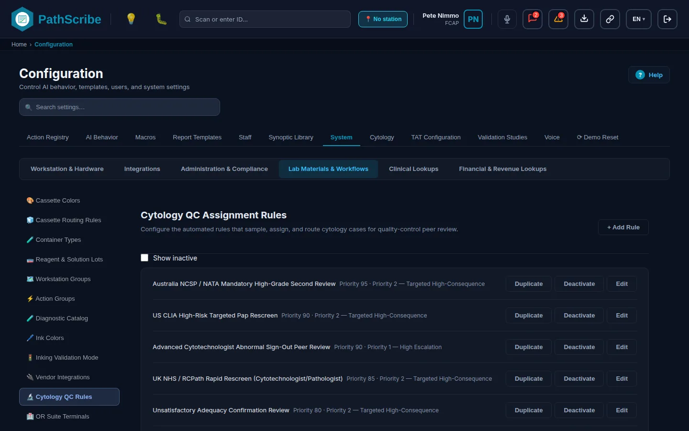
6. Field reference.
| Field Name | Data Type / Format | Required/Optional | Description & Business Logic | System Default |
|---|---|---|---|---|
| Rule list | Name, "Priority N", priority tier, Inactive tag | Not applicable | Not applicable | |
| + Add Rule, Edit, Duplicate, Deactivate / Reactivate, Show inactive | Buttons and switch | Not applicable | Duplicate names the copy "(name) (Copy)". | Show inactive off |
Add QC Rule and Edit QC Rule window
| Field Name | Data Type / Format | Required/Optional | Description & Business Logic | System Default |
|---|---|---|---|---|
| Rule Name | Text | Required | Blank | |
| Description | Text | Optional | Blank | |
| Evaluation Priority (higher evaluates first) | Whole number | Required | 50 | |
| SLA (hours) | Number | Required | The time allowed to complete the review. | 24 |
| Peer Review Priority Tier | Choice: Priority 1 - High Escalation, Priority 2 - Targeted High-Consequence, Priority 3 - Routine Random | Required | Priority 3 - Routine Random | |
| Active | Checkbox | Optional | On | |
| Sampling Logic | Choice: Percentage, Interval (every Nth case), Fixed Volume (first N cases) | Required | One number box follows the choice: Rate %, Every Nth case, First N cases. | Percentage, 10 percent |
| Jurisdictions | Checkboxes of countries | Optional | Leave all unchecked to apply the rule in every jurisdiction. | None ticked |
| Performing Facility IDs | Comma-separated text | Optional | Blank | |
| Provider role | Checkboxes: Pathologist, Cytotechnologist | Optional | Applies to cases read by that role. | None ticked |
| Onboarding status | Checkboxes: New Hire, Probationary | Optional | Applies to staff in onboarding. | None ticked |
| Eligible Reviewer Roles | Comma-separated text | Optional | Who may be assigned the review. | Blank |
| Specimen category | Checkboxes: GYN Pap, Non-GYN Fluid, Fine Needle Aspiration (FNA) | Optional | None ticked | |
| Adequacy | Checkboxes: Satisfactory, Unsatisfactory, Limited | Optional | None ticked | |
| Result Filter | Choice: Any result, Negative only, Non-negative only | Optional | Any result | |
| High-Risk Flags | Comma-separated text | Optional | Blank | |
| Bethesda Classifications | Comma-separated text | Optional | Blank | |
| SNOMED Concept Codes | Comma-separated text | Optional | Blank | |
| Save, Cancel | Buttons | Not applicable | Not applicable |
7. Permissions. Open the screen: screen:configuration:open. Change: config:cytology-qc-rules:manage (high risk; Admin and Lab Director).
Known limits. Contract: docs/architecture/CYTOLOGY_QC_API.md.
# Cytology QC Random Selection Rates
Status: Built
1. Navigation: Configuration tab Cytology > QC Random Selection Rate 2. Maintenance item: QC Random Selection Rate (title on screen: Cytology QC Random Selection Rates)
3. Business purpose and scope. Two independent rates: the percentage of Negative GYN results and the percentage of Non-Negative GYN results randomly selected for the QC pool. There is an enterprise default, and optional facility and staff-member overrides. A staff override wins over a facility override, which wins over the enterprise default. Use a staff override for a higher rate for a new employee or student.
4. Prerequisites and dependencies. Facilities (Facility Dictionary) and staff (Staff Members) for the overrides.
5. Screen.

6. Field reference.
| Field Name | Data Type / Format | Required/Optional | Description & Business Logic | System Default |
|---|---|---|---|---|
| Enterprise Default: Negative | Number 0 to 100 (percent) | Required | 10 | |
| Enterprise Default: Non-Negative | Number 0 to 100 (percent) | Required | 10 | |
| Save | Button | Not applicable | Shows "Unsaved change" until saved. | Not applicable |
| Facility Overrides: + Add Override | Facility picklist; Negative and Non-Negative rates; Save, Cancel, Remove | Optional | An override can leave a rate blank to inherit it ("(value)% (inherited)"). The list reads "Neg x, Non-Neg y". | None ("No facility overrides") |
| Staff Member Overrides: + Add Override | Staff member picklist; Negative and Non-Negative rates; Save, Cancel, Remove | Optional | Wins over any facility override. | None ("No staff overrides") |
7. Permissions. Open the screen: screen:configuration:open. Change: config:cytology-qc-rates:manage (high risk; Admin and Lab Director).
Known limits. Contract: docs/architecture/CYTOLOGY_API.md (ICytologyQcSettingsService).
# Cytology Daily Workload Cap
Status: Built
1. Navigation: Configuration tab Cytology > Daily Workload Cap 2. Maintenance item: Daily Workload Cap (title on screen: Cytology Daily Workload Cap)
3. Business purpose and scope. The maximum number of GYN cytology slides a cytotechnologist may screen in one day (the CLIA workload limit), with the same three levels as the QC rates: enterprise default, facility overrides and staff-member overrides (staff wins over facility). It also sets the time the screening day starts, for the end-of-day hours sign-off and the workload report. The limit itself is checked over a rolling 24 hours and does not use the day start.
4. Prerequisites and dependencies. Facilities and staff for the overrides. A lab time zone is set in the System settings (outside this chapter).
5. Screen.

6. Field reference.
| Field Name | Data Type / Format | Required/Optional | Description & Business Logic | System Default |
|---|---|---|---|---|
| Enterprise Default (slides / day) | Whole number 1 to 100 | Required | Error "The cap must be a whole number of slides from 1 to 100." | 100 |
| Save | Button | Not applicable | Shows "Unsaved change". | Not applicable |
| Screening day starts at | Picklist of hours | Required | Midnight by default; 6:00 AM keeps a 10 PM to 6 AM night shift on one date. A change applies from now on; earlier days keep the start time in force then. Error "You don't have permission to change this." | Midnight |
| Facility Overrides: + Add Override | Facility picklist, Daily limit (1 to 100); Save, Cancel, Remove | Optional | When every facility already has one: "Every facility already has an override. Remove one to set it again." | None |
| Staff Member Overrides: + Add Override | Staff member picklist, Daily limit (1 to 100); Save, Cancel, Remove | Optional | Use a lower cap for a new employee or student. | None |
7. Permissions. Open the screen: screen:configuration:open. Change: config:cytology-workload-cap:manage (high risk; Admin and Lab Director).
Known limits. Contract: docs/architecture/CYTOLOGY_API.md (ICytologyWorkloadCapSettingsService).
# Contribution Settings
Status: Partial
1. Navigation: Configuration tab System > group Administration & Compliance 2. Maintenance item: Contribution Settings (title on screen: Contribution Dashboard Settings)
3. Business purpose and scope. Controls what pathologists see on their own My Contribution page, and which time zone monthly and year-to-date metrics (case counts and RVU) are grouped in. Administrators, pathologist-admins and super-administrators always see the peer and institutional comparison data; the peer switch only gates the plain pathologist's view of themselves against others. Storage is always UTC; the time zone only decides how a signed-out case is assigned to a day or month (an 11 pm sign-off counts toward that same day).
4. Prerequisites and dependencies. None.
5. Screen.
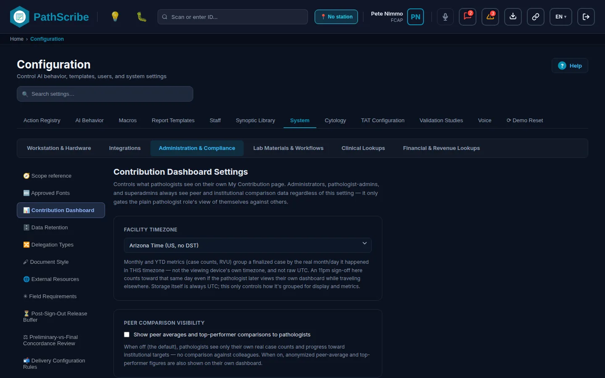
6. Field reference. Each change saves at once and shows "Saved".
| Field Name | Data Type / Format | Required/Optional | Description & Business Logic | System Default |
|---|---|---|---|---|
| Facility Timezone | Picklist: Eastern, Central, Mountain, Arizona (no DST), Pacific, Alaska, Hawaii (no DST) (all US), UK Time, UTC | Required | A list of nine; other zones cannot be chosen. | Arizona Time (US, no DST) |
| Show peer averages and top-performer comparisons to pathologists | Checkbox ("Peer Comparison Visibility") | Optional | Off: pathologists see only their own case counts and progress toward institutional targets. On: anonymised peer-average and top-performer figures also show. | Off |
7. Permissions. Open the screen: screen:configuration:open. Change: config:contribution-settings:manage (high risk; Admin and Lab Director; checked when the change is saved).
Known limits. Partial: the values are kept by the app's system-config store, which today writes to browser storage. Server storage so that every workstation sees the same settings is planned (PS-345, systemConfigStore.ts) and the server system-config contract exists in docs/architecture/DICTIONARIES_CONFIG_API.md. Until then a setting made on one computer is not seen on another. Per-case RVU tracking beyond this switch is not built (it awaits legal and compliance review).
# Feedback
Status: Built
1. Navigation: Configuration tab System > group Administration & Compliance 2. Maintenance item: Feedback
3. Business purpose and scope. The QA feedback button lets testers report a problem from any screen, with a screenshot and no patient details. This screen chooses when the button shows and who receives the reports. By default the button is hidden on a production instance and shown on a validation instance. It also holds the validation recipients (who receives QA feedback in the AI / Template validation category) and the enhancement request destination URL (where the light-bulb Enhancement Request is delivered instead of by email).
4. Prerequisites and dependencies. None.
5. Screen.

6. Field reference.
| Field Name | Data Type / Format | Required/Optional | Description & Business Logic | System Default |
|---|---|---|---|---|
| QA feedback button | Choice (radio): Default for this instance, Always shown, Always hidden | Required | A line says whether this is a production or validation instance and what the default is. Error "Choose when the button shows." | Default for this instance |
| QA recipients | E-mail addresses separated by commas | Required whenever the button shows | Error "Add at least one recipient: the button shows on this instance, and feedback would have nowhere to go." An invalid address is refused. | Blank |
| Administrator copy (cc) | E-mail addresses separated by commas | Optional | Copied on QA and validation feedback. | Blank |
| Validation recipients | E-mail addresses separated by commas | Optional | Receive QA feedback in the AI / Template validation category, with the validation study and template the sender linked (ids, names and template version are in the message). Empty: that feedback goes to the QA recipients and the sender's confirmation says so. If both lists are empty the sender sees "No recipients configured." An invalid address is refused. | Blank |
| Enhancement request destination URL | Web address (https only) | Optional | Where the Enhancement Request (light bulb) is delivered, as JSON in a POST. Empty: the address the deployment was set up with (VITE_ENHANCEMENT_REQUEST_URL in config.json), and with neither, enhancement requests are emailed. A line under the field shows the host in use. Refused: http, an address with a user name, password or # part. The address may carry a path and a query (a form id), so one field is enough. |
Blank (deployment default) |
| Save | Button | Not applicable | Shows "Saved" or the reason. | Not applicable |
7. Permissions. Open the screen: screen:configuration:open. Change: config:feedback:manage (high risk; Admin and Lab Director; the Save button is permission-gated).
Known limits. Contract: docs/architecture/CONFIG_DICTIONARIES_API.md.
Destination, step by step. (1) Ask IT to add the website's origin to the security policy (connect-src): put VITE_ENHANCEMENT_REQUEST_URL in the deployment's config.json and the generator adds it (docs/architecture/FEEDBACK_DESTINATION.md); an address typed here for a different site is refused by the browser until its origin is added. (2) Type the address, or leave it empty to use the deployment's. (3) Save. (4) Send a test enhancement request: the confirmation reads "Delivered to" and the host. What is sent: the title, description, category, priority, the system details if the sender included them (without their user id), and the screenshot only if the sender included it (patient data masked). The sender's PathScribe sign-in token is never sent. The website should answer with 204 or a JSON object; the website must also allow the request from PathScribe's address (CORS). Any other reply, a refusal or no connection is reported as "The request could not be delivered to the destination. Nothing was sent.", with no text from the website.
What is not built. The demonstration build never sends to the destination: it keeps the request in the Simulated mail outbox and says nothing was sent. QA and validation feedback is always emailed (the destination is for enhancement requests). No list of feedback is kept inside PathScribe and the validation study page does not show linked feedback; the e-mail and the audit entry are the record. Sending feedback needs no capability; changing these settings needs config:feedback:manage.
# Research Feed
Status: Built
1. Navigation: Configuration tab System > group Administration & Compliance 2. Maintenance item: Research Feed
3. Business purpose and scope. The literature headline on the Home dashboard. Articles come straight from NCBI PubMed, sorted by publication date. It is an automated feed, not a curated or reviewed selection, and must never be presented to clinicians as guidance. The feed is fetched by the user's browser directly from NCBI; a failing feed shows nothing and never stops the dashboard.
4. Prerequisites and dependencies. The workstation's browser must be able to reach NCBI.
5. Screen.

6. Field reference.
| Field Name | Data Type / Format | Required/Optional | Description & Business Logic | System Default |
|---|---|---|---|---|
| Last successful retrieval; Last attempt | Display | Not applicable | Shows "Never" before the first success. | Not applicable |
| Show the feed on the dashboard | Checkbox | Optional | On | |
| Search query | Text (PubMed syntax) | Required | Error "Search query cannot be empty." The exclusions for retracted publications, preprints, editorials, comments and letters are the feed's only quality filter; removing them can surface a retracted paper. | digital pathology OR synoptic reporting, English, excluding retracted, preprint, editorial, comment and letter |
| Article URL | https address with {PMID} |
Required | Must contain {PMID}, and be https on an approved host (nih.gov, nlm.nih.gov, doi.org). |
https://pubmed.ncbi.nlm.nih.gov/{PMID}/ |
| API endpoint | https address | Required | NCBI eUtils base URL, no trailing slash, approved host only. Change only if NCBI moves the service. | https://eutils.ncbi.nlm.nih.gov/entrez/eutils |
| Restore defaults, Save | Buttons | Not applicable | After a save: "Existing cached articles refresh within 24 hours." | Not applicable |
7. Permissions. Open the screen: screen:configuration:open. Change: config:research-feed:manage (high risk; Admin and Lab Director).
Known limits. Contract: docs/architecture/REFERRAL_RESEARCH_API.md (the settings). The article fetch itself is a browser call to NCBI, with no PathScribe server in between.
# Day-to-day pages that these settings drive
These five pages are workbench or queue pages, not maintenance screens. They are described so an administrator knows what each one shows, who can open it and which setting changes it. None of them is part of setup.
# Home
Status: Built
1. Navigation: The page shown after sign-in (/).
2. Maintenance item: Not applicable. This is a landing page.
3. Business purpose and scope. A set of tiles, one per place the signed-in person may go. A tile shows only when at least one of the screens it leads to is granted to one of the person's roles. A person with no screen sees "None of your roles gives you access to a screen yet. Ask your administrator to assign one." A footer shows the copyright line and the live system status: a coloured dot with "Checking", then "Operational", "Degraded" or "Unavailable", or "Status unavailable" when the check itself fails. The status comes from the API server's health check (GET /api/health/health-status/check), made when Home opens and again when the tab becomes visible after five minutes (never on a timer). It reports four fixed components (database, messaging, queues, interface engine) with no patient data, and the server decides the overall state. In the demo there is no server, so the status is labelled as simulated. The footer makes no compliance statement.
4. Prerequisites and dependencies. Access is set by the role and capability set up in Chapter 2 (staff roles) and by the capability seeds. There is no tile setting of its own.
5. Screen.

6. Columns, filters and buttons.
| Field Name | Data Type / Format | Required/Optional | Description & Business Logic | System Default |
|---|---|---|---|---|
| Welcome back, (name) | Text | Not applicable | Not applicable | |
| Accession | Tile | Not applicable | Opens Accession. Needs screen:accession:open (PA, Accessioner). |
Not applicable |
| Worklist | Tile | Not applicable | Opens the Worklist, and the Cytology QC and Surgical QA views. Shown if any of screen:worklist:open, screen:cytology-qc-queue:open, screen:surgical-qa-worklist:open is held. |
Not applicable |
| Search | Tile | Not applicable | screen:search:open. |
Not applicable |
| Intraop Queue | Tile | Not applicable | screen:intraop-queue:open (Pathologist, Fellow, Resident, PA). |
Not applicable |
| Lockbox Drop-Off | Tile | Not applicable | screen:lockbox-drop-off:open (Accessioner, Admin). |
Not applicable |
| My Contribution | Tile | Not applicable | screen:my-contributions:open (Pathologist, Fellow, Resident, PA, Lab Director). |
Not applicable |
| Bench Contributions | Tile | Not applicable | screen:bench-contributions:open (Accessioner and the technologist roles). |
Not applicable |
| Pathology Workspace | Hub tile | Not applicable | Leads to Cytology Workspace, Microtome, Embedding, Slide Distribution, Molecular, Batch Management and Margin Exception Review. Shows if any is granted. | Not applicable |
| Quality & Compliance | Hub tile | Not applicable | Leads to Audit Log, Quality Assurance, Registry Exceptions, Autopsy Dashboards and the Outbound Queue. A badge shows how many registry submissions need a person. | Not applicable |
| Tumor Board / MDT | Tile | Not applicable | screen:tumor-board:open (Pathologist, Fellow, Resident, PA). |
Not applicable |
| Configuration | Tile | Not applicable | screen:configuration:open (Admin, Template Author, Template Approver, Lab Director). |
Not applicable |
7. Permissions. Each tile has the screen capability named above; there is no capability for Home itself. Any signed-in person reaches Home. Known limits. Add-On Orders and the Post-Sign-Out QA views are not tiles: they are an action on a case and views inside the Worklist. Facility Ops dashboards are not on Home.
# Lockbox Drop-Off
Status: Built
1. Navigation: Home > Lockbox Drop-Off (/lockbox-drop-off).
2. Maintenance item: Not applicable. This is a workbench screen.
3. Business purpose and scope. A kiosk for specimens left in the lockbox after hours. The person scans each container; PathScribe writes an immutable "Received in Lockbox" receipt, with a placeholder when no order matches. The morning team works from the Overnight folder until every receipt is accessioned. It has two tabs: Drop-Off and Overnight folder.
4. Prerequisites and dependencies. The ordering client and physician lists on the placeholder form come from Clients and Physicians. A barcode matches an order when an order with it exists; without one, a placeholder is kept and no accession number is made.
5. Screen.
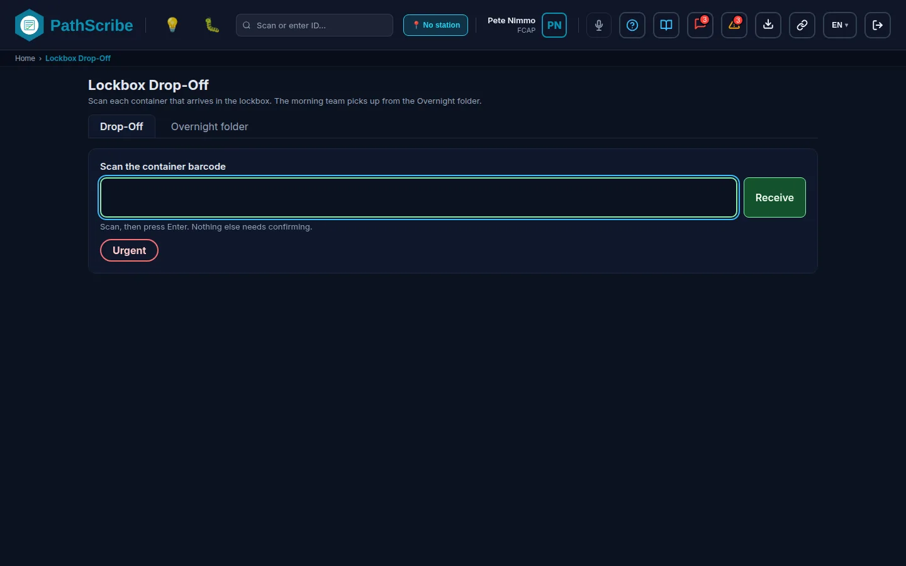
6. Columns, filters and buttons.
| Field Name | Data Type / Format | Required/Optional | Description & Business Logic | System Default |
|---|---|---|---|---|
| Scan the container barcode | Scanner input, then Enter | Required | Nothing else needs confirming. A barcode received before shows the earlier receipt and makes no new one. | Blank |
| Urgent | Toggle | Optional | Marks the receipt "Urgent, high priority". | Off |
| Callback number (optional) | Text | Optional | Shown when Urgent. | Blank |
| Receipt card | Ordering facility ("Not recorded" if none), Ordering physician, Received, Received by, Callback number | Not applicable | Ends "Scan the next container." | Not applicable |
| Placeholder form ("No pending order for this barcode") | Barcode; Ordering client (or "Not listed or not known" plus a free-text client); Ordering physician; Time dropped | Optional (every field) | Time dropped starts at the current time; change it only if the drop was earlier. Record drop saves; Cancel discards. | Current time |
| Overnight folder: Refresh | Button | Not applicable | Not applicable | |
| Time to receipt (QA) summary | Waiting now, Longest waiting, Accessioned, Median, Mean, Longest, Urgent median | Not applicable | From the drop in the lockbox to accessioned. "No data yet" when empty. | Not applicable |
| Overnight folder table | Columns: Accession number or placeholder, Priority, Ordering facility, Received, Received by, Waiting, State, Actions | Not applicable | State: Order matched, Placeholder not linked, Placeholder linked to an order. Empty: "Nothing is waiting." | Not applicable |
| Link to order | Button, then Real order or accession number and Link / Cancel | Required to link | Needs lockbox:placeholder:resolve. |
Not applicable |
| Mark accessioned | Button | Not applicable | Needs lockbox:folder:review. |
Not applicable |
| Open Accession | Button | Not applicable | Opens Accession for the receipt. | Not applicable |
7. Permissions. Open the screen: screen:lockbox-drop-off:open (Accessioner and Admin; standard risk; opening is not audited). Scan and record a receipt: lockbox:specimen:receive (high risk, audited; Accessioner). Overnight folder, summary and Mark accessioned: lockbox:folder:review (Accessioner, and Admin for oversight). Link a placeholder: lockbox:placeholder:resolve (Accessioner).
Known limits. Contract: docs/architecture/LOCKBOX_API.md. Receipts carry no patient data. In the demonstration the folder starts with six seeded receipts (two urgent, one already accessioned); Full Reset under Demo Reset removes everything done on the screen and loads a fresh set.
# Quality Assurance
Status: Built
1. Navigation: Home > Quality & Compliance > Quality Assurance (/quality-assurance; a pillar can be named in the address, ?pillar=).
2. Maintenance item: Not applicable. This is a working queue.
3. Business purpose and scope. The quality working queue. It is organised in eight "pillars". Operations tracks nonconformances and clinical quality metrics. Financials tracks billing and coding deficiencies raised at sign-out. CAPA Engine governs the corrective-action life cycle: a correction does not close by itself, it is escalated here until someone confirms it worked, with periodic management review. Cytology QA and QA Dashboard report review activity, Inspection Mode packages it as audit evidence, Enterprise Rollup is a cross-lab roll-up, and Activities lists the QA activities defined on QA Configuration Center.
4. Prerequisites and dependencies. Deficiency types are from Specimen Deficiencies; activities and CAPA triggers from QA Configuration Center; patterns from QA Trend Policy; overdue follow-ups from Follow-Up Tracking.
5. Screen.
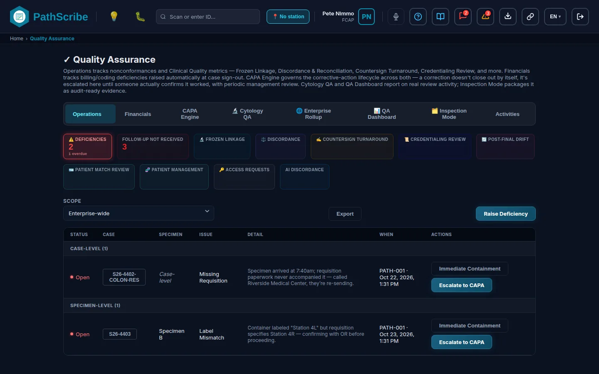
6. Columns, filters and buttons.
| Field Name | Data Type / Format | Required/Optional | Description & Business Logic | System Default |
|---|---|---|---|---|
| Pillar tabs | Operations, Financials, CAPA Engine, Cytology QA, Enterprise Rollup, QA Dashboard, Inspection Mode, Activities | Not applicable | Operations | |
| Operations tiles | Deficiencies (with "N overdue"), Follow-up not received, Frozen Linkage, Discordance, Countersign Turnaround, Credentialing Review, Post-Final Drift, Patient Match Review, Patient Management, Access Requests, AI discordance | Not applicable | Each opens its list. Deficiencies are split into Case-Level and Specimen-Level. | Deficiencies |
| Operations actions | Raise Deficiency, Escalate to CAPA, Immediate Containment, Verify Effectiveness, Start Management Review | Not applicable | Raise Deficiency: case id (Look up), optional specimen, Deficiency Type, "What was observed". Escalate to CAPA: Resolution Type, Corrective Action, Root Cause, Preventive Action (optional), Effectiveness Check Due; the item moves to Pending Verification, not Closed. Immediate Containment: "What was done"; closes at once, no root cause or later check. Verify Effectiveness: "Did the corrective action actually work?" with Effective - Close or Recurred - Reopen. | Not applicable |
| CAPA Engine tiles | Recommended, Discordance Patterns, Escalated to CAPA, Closed, Mgmt Reviews | Not applicable | Recommended: CAPA recommendations from QA activities (owner shown) that a QA lead confirms or dismisses. Discordance Patterns: shown only to holders of qa:pathologist-trend:view. A recurred item shows "Reopened after a failed effectiveness check". |
Recommended |
| Financials tiles | Billing Deficiencies, Resolved, Code Review Pool, Charges awaiting approval, Failed Dispatches ("in Config") | Not applicable | Resolve Billing Deficiency: Resolution Reason, then Continue to correction. Code Review Pool: Review with Review Outcome (No Issue Found or Raise Billing Deficiency), the charge, and Auditor Notes. Start correction opens the billing correction. Failed Dispatches opens the Outbound Queue in Configuration. | Billing Deficiencies |
| Export | Button on lists | Not applicable | Each list has its own export capability. | Not applicable |
7. Permissions. Open the screen: screen:quality-assurance:open (Admin, Lab Director, QA Reviewer). Submit a Management Review: qa:management-review:submit (high risk, needs the Quality Assurance screen; granted with the other Quality deficiency actions; Batch 659). A change that comes back "not saved" now leaves the window open with what was typed. Decide CAPA recommendations: qa:capa-recommendation:decide (Admin, Lab Director, QA Reviewer). See and decide discordance patterns: qa:pathologist-trend:view and qa:pathologist-trend:decide (Lab Director only by default). Record a follow-up: qa:follow-up:record (Admin, Lab Director, QA Reviewer). Exports: one capability per list (qa:deficiencies:export, qa:management-reviews:export, qa:billing-deficiencies:export, qa:inspection-evidence:export and others; all high risk; Admin and QA Reviewer hold most). Correct billing: billing:applied-code:correct.
Known limits. "Payer and Pre-Auth Audits" are not built (no detection exists), so Financials has no such tab. A CAPA is never opened automatically: every recommendation waits for a person. Contract: docs/architecture/QUALITY_API.md.
# Margin Exception Review
Status: Built
1. Navigation: Home > Pathology Workspace > Margin Exception Review (/margin-exception-review).
2. Maintenance item: Not applicable. This is a working queue.
3. Business purpose and scope. Lists margin-distance answers in free text that PathScribe could not confidently turn into a number, so a person can tag the real distance or dismiss the item with a reason.
4. Prerequisites and dependencies. Items arrive from synoptic reports (Chapter 6) whose margin field is free text.
5. Screen.
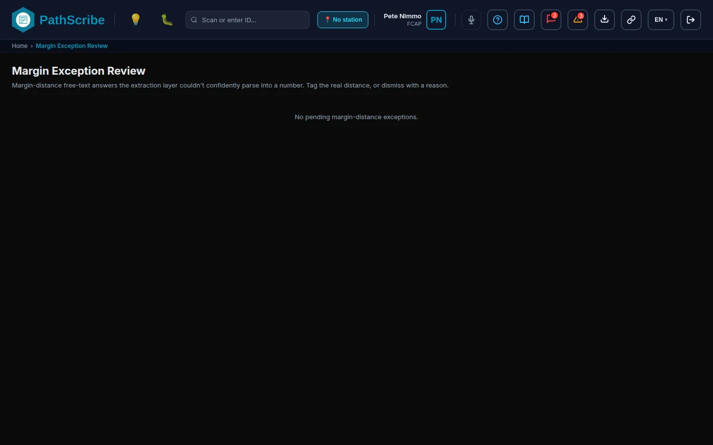
6. Columns, filters and buttons.
| Field Name | Data Type / Format | Required/Optional | Description & Business Logic | System Default |
|---|---|---|---|---|
| Row | Patient name and accession; field label; the raw text; the reason | Not applicable | Reasons: No answer given yet; No number found in the text; A number was found, but surrounded by text this parser doesn't trust. | Not applicable |
| Margin distance (mm) | Number, 0 or more, step 0.1 | Required to resolve | Error "Enter a margin distance of 0 or more." | Blank |
| Resolve | Button | Not applicable | Saves the tagged distance. Needs case:margin-exception:resolve. |
Not applicable |
| Dismiss | Button, then a window with Why this field has no distance to give | Required reason | Dismiss or Cancel. The person and reason are recorded. | Not applicable |
| Open Case | Button | Not applicable | Opens the report and returns here. | Not applicable |
| Empty list | Text | Not applicable | "No pending margin-distance exceptions." | Not applicable |
7. Permissions. Open the screen: screen:margin-exception-review:open (Pathologist, Fellow, Resident, PA). Resolve or dismiss: case:margin-exception:resolve (high risk; the same roles).
Known limits. No configuration screen sets the parser; the rule is in the product.
# Cytology QC Queue
Status: Built
1. Navigation: Home > Worklist, view Cytology QC (/cytology-qc-queue redirects to the Worklist view). Title: Cytology QC Peer Review Queue.
2. Maintenance item: Not applicable. This is a working queue.
3. Business purpose and scope. The review work produced by Cytology QC Rules and the QC random selection rates. Each item is a case selected for peer review with a deadline from its rule's SLA. Two views: Queue and Compliance.
4. Prerequisites and dependencies. Without QC rules nothing is selected. The reviewer pool for an item comes from the rule's eligible reviewer roles.
5. Screen.
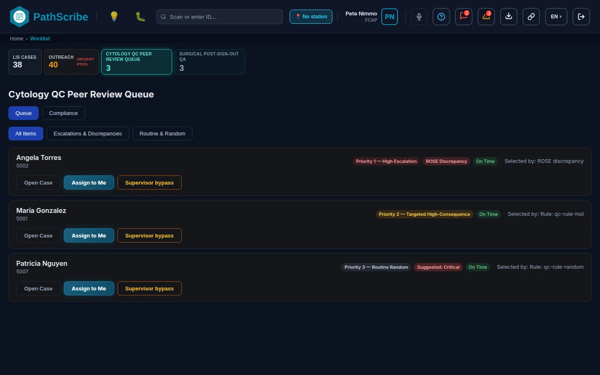
6. Columns, filters and buttons.
| Field Name | Data Type / Format | Required/Optional | Description & Business Logic | System Default |
|---|---|---|---|---|
| Queue / Compliance | Tabs | Not applicable | Compliance shows the QC compliance panel. | Queue |
| All Items, Escalations & Discrepancies, Routine & Random | Tabs | Not applicable | Filters the queue. | All Items |
| Row | Case, rule name, priority tier, SLA state, "Selected by (reasons)", "Reviewer pool (roles)" | Not applicable | SLA state: On Time, Approaching SLA, SLA Breached. | Not applicable |
| Open Case | Button | Not applicable | Not applicable | |
| Assign to Me | Button | Not applicable | Refused if you signed the case out ("another pathologist must review it") or you are not in the reviewer pool. | Not applicable |
| Record Concurrence, Record Discrepancy | Buttons | Not applicable | Record the review. A discrepancy opens a window for the details. Needs cytology:qc-review:record. A case "Assigned to another reviewer" shows no buttons. |
Not applicable |
| Escalate | Button and window ("Escalate this overdue review?") with Reason | Required reason | Returns an overdue review to the queue unassigned. | Not applicable |
| Supervisor bypass | Button and window ("Bypass QC review for this case?") with Justification | Required justification | Approves the case without QC review to prevent clinical delay. The name and justification are kept in the audit log. | Not applicable |
| Empty | Text | Not applicable | "No cases in this queue." | Not applicable |
7. Permissions. Open the view: screen:cytology-qc-queue:open (Pathologist, Fellow). Record a review or escalate: cytology:qc-review:record (Pathologist, Fellow; high risk). Supervisor bypass: cytology:qc-review:bypass (high risk; held by no role by default, only the ForMedrixAI super-administrator; an administrator must assign it).
Known limits. Contract: docs/architecture/CYTOLOGY_QC_API.md.